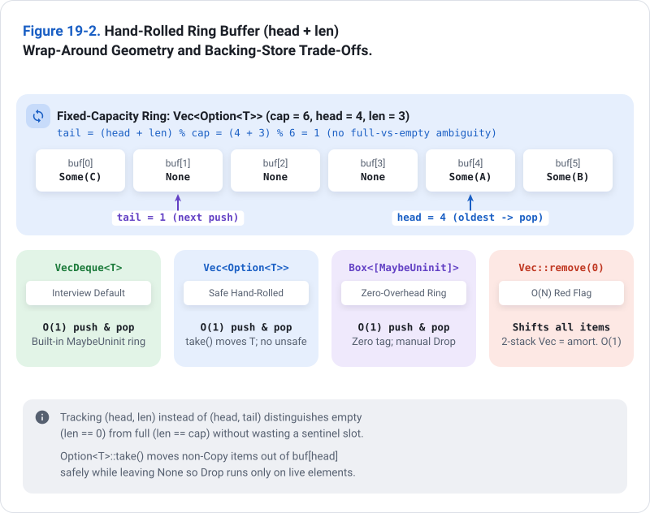
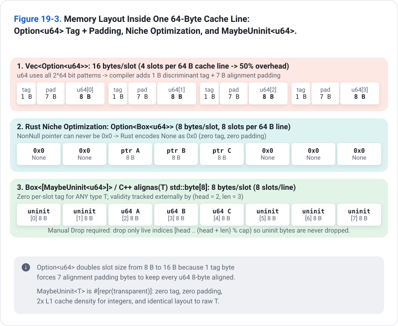
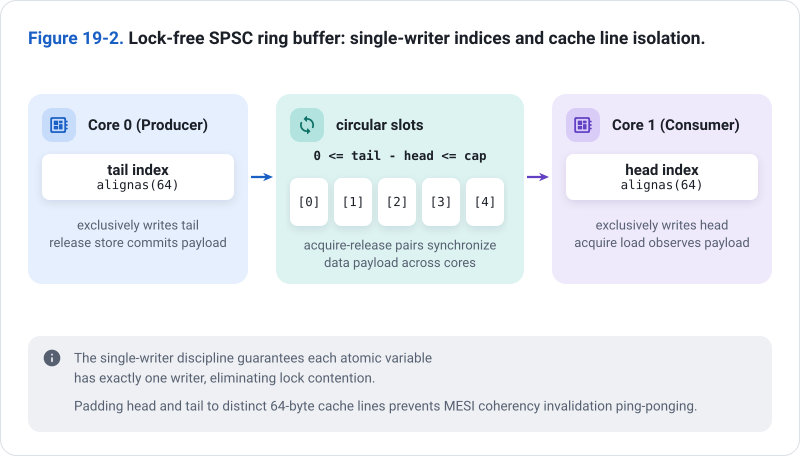
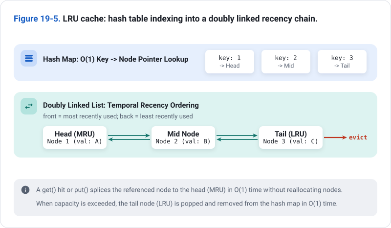
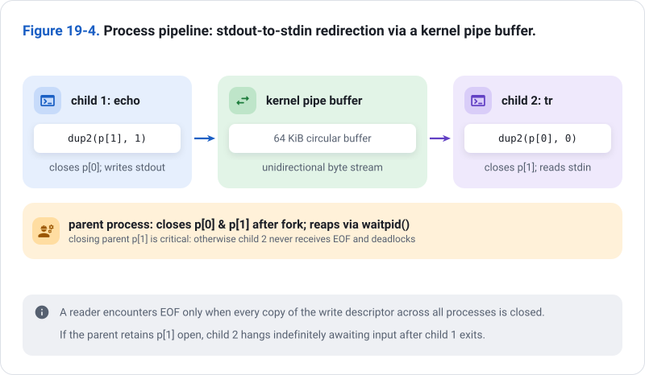

19. Systems Interview Problems: Derivations and Reference Implementations
The systems programming interview serves as an empirical evaluation of an engineer’s capacity to translate low-level hardware constraints into correct, deterministic software abstractions. While application-level engineering frequently abstracts away execution costs, systems engineering requires direct reasoning from first principles: the mechanics of cache coherence, memory ordering semantics, kernel privilege transitions, memory fragmentation, and atomic instruction guarantees.
19.1 Architectural Framework and Problem-Solving Discipline
Every robust systems component is derived from three foundational tenets:
- Formal Contract Specification: Defining explicit preconditions, postconditions, and resource ownership boundaries before writing code. This encompasses capacity limits, pointer ownership transfers, lifetime bounds, and the exact threading model.
- State Invariant Formulation: Explicitly identifying the logical properties that must hold across all execution paths. In concurrent programming, this dictates the exact state protected by each mutex or synchronized via atomic variables.
- Boundary and Interleaving Analysis: Rigorously tracing edge cases (such as queue saturation, memory depletion, cache line false sharing, and spurious wakeups) under arbitrary thread interleavings.
This chapter presents ten canonical systems programming problems, followed by a rigorous examination of six fundamental operating system mechanisms. Each problem articulates the underlying systems model, establishes the mathematical and concurrency invariants, provides verified reference implementations in C++20 and Rust (2024 edition), and evaluates subtle hardware and language-level trade-offs.
19.2 The Bounded Blocking Queue
A bounded blocking queue is the foundational synchronization primitive underpinning multi-threaded producer-consumer architectures. It provides a thread-safe FIFO buffer of fixed maximum capacity, decoupling production rates from consumption rates while preventing unbounded heap exhaustion.
19.2.1 Concurrency Model and Synchronization Primitives
Managing a shared bounded buffer requires resolving two distinct concurrency hazards:
- Mutual Exclusion: Concurrent threads must not mutate queue pointers, lengths, or ring indices simultaneously, which would induce data races and state corruption.
- Predicate Coordination: When the queue reaches capacity, producer threads must suspend execution until space becomes available. Conversely, when the queue is empty, consumer threads must suspend until an item is enqueued.
A mutex provides mutual exclusion but possesses no native mechanism for suspended waiting on arbitrary logical state. A thread that loops continuously while polling queue occupancy (“busy-waiting”) wastes processor cycles and starves other threads contending for execution cores.
To resolve this, the queue pairs a mutex with condition variables. A condition variable enables a thread to release its held mutex and enter a sleep state atomically in a single hardware-supervised step. The atomicity of this transition is essential: if releasing the lock and sleeping were separate operations, a competing thread could signal a state change in the intervening gap, causing the waiting thread to sleep indefinitely, a catastrophic concurrency failure known as a lost wakeup.
Because the queue coordinates two opposing boundary states, it employs dual condition variables:
is_full: Suspends producer threads while the queue is full (size == capacity).is_empty: Suspends consumer threads while the queue is empty (size == 0).

19.2.2 State Invariants and Predicate Verification
The queue maintains the following fundamental invariant across all operations:
∀ t under mutex lock: 0 ≤ size ≤ capacity
Every state modification adheres to strict pre- and post-conditions:
push(item): Evaluatesis_full(). If true, the caller suspends onis_full. Once unblocked withsize < capacity, it appends the item, incrementssize, and signalsis_empty.pop(): Evaluatesis_empty(). If true, the caller suspends onis_empty. Once unblocked withsize > 0, it dequeues the front item, decrementssize, and signalsis_full.
A critical requirement in predicate synchronization is the repeated evaluation loop (while (is_full()) / while (is_empty())). When a thread is awakened, it is merely moved from the condition variable’s sleep queue to the mutex’s contention queue; it does not instantaneously resume execution with the lock. By the time the thread re-acquires the mutex, an intervening thread may have intercepted the vacancy or consumed the available item. Furthermore, POSIX and operating system schedulers permit spurious wakeups, where a waiting thread unblocks without any explicit notification. Encapsulating the wait operation within a predicate loop ensures that a thread never advances until the condition is verified under exclusive lock ownership.
19.2.3 Reference Implementation
Listing 19-1. A bounded blocking queue (C++20).
// ch19/bounded_queue.cpp: a blocking queue of fixed capacity.
#include <condition_variable>
#include <cstdint>
#include <deque>
#include <iostream>
#include <mutex>
#include <thread>
#include <vector>
/// A queue that blocks producers while it is full and consumers while it is empty.
template <typename T>
class BoundedQueue {
public:
/// A capacity of 0 would block every push forever, so the minimum is 1.
explicit BoundedQueue(size_t capacity) : capacity_(capacity == 0 ? 1 : capacity) {}
/// Appends one item. Waits while the queue is full.
void push(T item) {
std::unique_lock<std::mutex> lock(mutex_);
while (is_full()) {
is_full_.wait(lock);
}
items_.push_back(std::move(item));
is_empty_.notify_one();
}
/// Removes the oldest item. Waits while the queue is empty.
T pop() {
std::unique_lock<std::mutex> lock(mutex_);
while (is_empty()) {
is_empty_.wait(lock);
}
T item = std::move(items_.front());
items_.pop_front();
is_full_.notify_one();
return item;
}
private:
bool is_full() const { return items_.size() == capacity_; }
bool is_empty() const { return items_.empty(); }
const size_t capacity_;
std::deque<T> items_;
std::mutex mutex_;
std::condition_variable is_full_; // producers sleep here while the queue is full
std::condition_variable is_empty_; // consumers sleep here while the queue is empty
};
int main() {
constexpr uint64_t kItemsPerThread = 50'000;
constexpr uint64_t kThreadPairs = 2;
BoundedQueue<uint64_t> queue(8);
uint64_t consumed_sum[kThreadPairs] = {0, 0};
std::vector<std::thread> threads;
for (uint64_t producer = 0; producer < kThreadPairs; ++producer) {
threads.emplace_back([&queue, producer] {
uint64_t first = producer * kItemsPerThread + 1;
for (uint64_t value = first; value < first + kItemsPerThread; ++value) {
queue.push(value);
}
});
}
for (uint64_t consumer = 0; consumer < kThreadPairs; ++consumer) {
threads.emplace_back([&queue, &consumed_sum, consumer] {
for (uint64_t taken = 0; taken < kItemsPerThread; ++taken) {
consumed_sum[consumer] += queue.pop();
}
});
}
for (std::thread& thread : threads) {
thread.join();
}
uint64_t item_count = kThreadPairs * kItemsPerThread;
uint64_t expected = item_count * (item_count + 1) / 2;
uint64_t consumed = consumed_sum[0] + consumed_sum[1];
std::cout << "expected sum " << expected << "\n"
<< "consumed sum " << consumed << "\n"
<< "match " << (expected == consumed ? "yes" : "NO") << "\n";
}
Output 19-1.
expected sum 5000050000
consumed sum 5000050000
match yes
Listing 19-2. The same queue in Rust.
// ch19/bounded_queue.rs: a blocking queue of fixed capacity.
use std::collections::VecDeque;
use std::sync::{Arc, Condvar, Mutex};
use std::thread;
type QueueResult<T> = Result<T, &'static str>;
const POISONED: &str = "a thread panicked while it held the queue mutex";
const PANICKED: &str = "a worker thread panicked";
/// A queue that blocks producers while it is full and consumers while it is empty.
struct BoundedQueue<T> {
capacity: usize,
items: Mutex<VecDeque<T>>,
is_full: Condvar, // producers sleep here while the queue is full
is_empty: Condvar, // consumers sleep here while the queue is empty
}
impl<T> BoundedQueue<T> {
fn new(capacity: usize) -> Self {
// A capacity of 0 would block every push forever, so the minimum is 1.
BoundedQueue {
capacity: capacity.max(1),
items: Mutex::new(VecDeque::new()),
is_full: Condvar::new(),
is_empty: Condvar::new(),
}
}
/// Appends one item. Waits while the queue is full.
fn push(&self, item: T) -> QueueResult<()> {
let items = self.items.lock().map_err(|_| POISONED)?;
let mut items = self
.is_full
.wait_while(items, |q| q.len() == self.capacity)
.map_err(|_| POISONED)?;
items.push_back(item);
self.is_empty.notify_one();
Ok(())
}
/// Removes the oldest item. Waits while the queue is empty.
fn pop(&self) -> QueueResult<T> {
let items = self.items.lock().map_err(|_| POISONED)?;
let mut items = self
.is_empty
.wait_while(items, |q| q.is_empty())
.map_err(|_| POISONED)?;
let item = items
.pop_front()
.ok_or("the queue was empty after the wait")?;
self.is_full.notify_one();
Ok(item)
}
}
fn main() -> QueueResult<()> {
const ITEMS_PER_THREAD: u64 = 50_000;
const THREAD_PAIRS: u64 = 2;
let queue = Arc::new(BoundedQueue::new(8));
let mut producers = Vec::new();
let mut consumers = Vec::new();
for producer in 0..THREAD_PAIRS {
let queue = Arc::clone(&queue);
producers.push(thread::spawn(move || -> QueueResult<()> {
let first = producer * ITEMS_PER_THREAD + 1;
for value in first..first + ITEMS_PER_THREAD {
queue.push(value)?;
}
Ok(())
}));
}
for _ in 0..THREAD_PAIRS {
let queue = Arc::clone(&queue);
consumers.push(thread::spawn(move || -> QueueResult<u64> {
let mut sum = 0;
for _ in 0..ITEMS_PER_THREAD {
sum += queue.pop()?;
}
Ok(sum)
}));
}
for producer in producers {
let pushed = producer
.join()
.map_err(|_| PANICKED)?;
pushed?;
}
let mut consumed = 0;
for consumer in consumers {
let sum = consumer
.join()
.map_err(|_| PANICKED)?;
consumed += sum?;
}
let item_count = THREAD_PAIRS * ITEMS_PER_THREAD;
let expected = item_count * (item_count + 1) / 2;
let verdict = if expected == consumed { "yes" } else { "NO" };
println!("expected sum {expected}");
println!("consumed sum {consumed}");
println!("match {verdict}");
Ok(())
}Output 19-2.
expected sum 5000050000
consumed sum 5000050000
match yes
The verification harness executes two concurrent producer threads and two concurrent consumer threads, processing 100,000 sequential integers (1 to 100,000). The mathematical sum of these values is:
Sum = (100,000 × 100,001) / 2 = 5,000,050,000
The verified outputs confirm that the aggregate consumed sum exactly matches this expectation, demonstrating zero item loss, zero duplication, and strict FIFO integrity under heavy thread contention.
In Rust, acquiring a mutex lock or waiting on a condition variable returns a PoisonError if another thread panicked while holding the guard. In the reference implementation, this error is converted into a structured message and propagated deterministically via the ? operator.
19.2.4 Backing-Store Variants and Building the Ring Buffer by Hand
In operating systems and embedded engineering interviews, picking the right underlying container for the access pattern is evaluated closely, and a standard follow-up immediately after Listing 19-2 is: “Now build the queue without VecDeque or std::deque.” Understanding every backing-store variant, and the exact ownership rules behind each one, turns a routine queue question into a demonstration of systems mastery.
| Backing Store | FIFO / LIFO | Push / Pop Cost | Memory & Safety Profile | When to Use |
|---|---|---|---|---|
VecDeque<T> / std::deque<T> | FIFO | O(1) / O(1) | Contiguous ring using MaybeUninit internally (Rust) or chunked blocks (C++); zero manual unsafe | Default interview choice for mutex-backed bounded queues |
Hand-rolled Vec<Option<T>> (head + len) | FIFO | O(1) / O(1) | Fixed allocation after new(), zero unsafe, handles any non-Copy / non-Default T; small Option tag overhead | Follow-up: “implement without VecDeque” in safe Rust / C++ (std::optional<T>) |
Raw Box<[MaybeUninit<T>]> | FIFO | O(1) / O(1) | Zero Option tag overhead, no Default bound; requires unsafe (write, assume_init_read) and custom Drop | Production channels, kernel rings, and lock-free SPSC queues (Section 19.4) |
Two-stack Vec<T> (inbox + outbox) | FIFO | Amortized O(1) | Plain Vec<T> with zero Option<T> and zero unsafe, but reverses inbox in O(N) whenever outbox empties | Functional or safe FIFO when occasional O(N) tail-latency spikes are acceptable |
Plain Vec<T> (push + pop) | LIFO | O(1) / O(1) | Plain Vec<T>, zero overhead, improves L1 cache warmth for recent items | Object pools and worker stacks where FIFO ordering is not required |
Plain Vec<T> (push + remove(0)) | FIFO | O(1) / O(N) | Shifts every remaining element left via memmove on every pop | Interview red flag unless you explicitly call out the O(N) cost for tiny bounds |
Why VecDeque Is the Right First Answer
For a mutex-guarded bounded queue in an interview, start with VecDeque::with_capacity(capacity) (or std::deque<T> in C++) and state your reasoning out loud: VecDeque is already a contiguous circular ring buffer whose push_back and pop_front operations both run in O(1) time without reallocating once pre-sized, while using MaybeUninit<T> internally to avoid Option<T> discriminant padding. Using Vec::remove(0) is a mild red flag on systems teams because removing from index 0 copies N - 1 elements left on every dequeue, turning a constant-time primitive into a linear bottleneck.
Why a Hand-Rolled Safe Ring Uses Vec<Option<T>> (and Not Plain Vec<T>)
When an interviewer asks you to drop VecDeque and write the circular buffer directly, three Rust ownership invariants explain why a generic ring buffer cannot be backed by a plain Vec<T>:
- Empty slots cannot remain uninitialized in
Vec<T>: Every index0..vec.len()in aVec<T>must hold a fully initializedT. At construction, the ring is empty, and arbitrary types such asString,TcpStream, orJobdo not implementDefault. (Plainvec![0u8; cap]works only forT: Copy + Default, such as a raw byte buffer.) - Moving a non-
Copyitem out ofbuf[head]: Writinglet item = self.buf[self.head];fails to compile for any owning type such asStringorBox<T>, becauseVec<T>retains ownership of the slot and would double-free it when overwritten or dropped. Wrapping each slot inOption<T>letsself.buf[self.head].take()atomically move ownership of theTto the caller while leavingNonein the slot. - Sound destruction on
Drop: When the ring is dropped while partially populated,Vec<Option<T>>executes destructors strictly on liveSome(T)slots and skips emptyNoneslots automatically.
Avoiding the Full-versus-Empty Ambiguity with (head, len)
A classic bug in hand-rolled ring buffers arises from tracking only (head, tail): when head == tail, the ring could be either completely empty (len == 0) or completely full (len == cap). Traditional fixes waste one array slot (cap + 1 allocation) or add a separate full: bool flag. Tracking head (index of the oldest live element) together with len (count of live elements) eliminates the ambiguity cleanly:
is_empty()islen == 0is_full()islen == cap- The next write index is derived deterministically as
tail = (head + len) % cap(or(head + len) & (cap - 1)whencapis a power of two).

Listing 19-2a. Bounded blocking queue backed by a hand-rolled Ring<T> without std::deque (C++20).
// ch19/ring_buffer.cpp: Hand-rolled fixed-capacity ring buffer (without std::deque)
// paired with std::mutex and dual std::condition_variables.
#include <cassert>
#include <condition_variable>
#include <cstddef>
#include <cstdio>
#include <mutex>
#include <optional>
#include <string>
#include <thread>
#include <utility>
#include <vector>
template <typename T>
class Ring {
public:
explicit Ring(size_t capacity)
: buf_(capacity == 0 ? 1 : capacity), head_(0), len_(0) {}
bool is_full() const { return len_ == buf_.size(); }
bool is_empty() const { return len_ == 0; }
void push_back(T item) {
size_t tail = (head_ + len_) % buf_.size();
buf_[tail].emplace(std::move(item));
++len_;
}
T pop_front() {
T item = std::move(*buf_[head_]);
buf_[head_].reset(); // Destroy moved-from slot so empty slots stay disengaged
head_ = (head_ + 1) % buf_.size();
--len_;
return item;
}
private:
std::vector<std::optional<T>> buf_;
size_t head_;
size_t len_;
};
template <typename T>
class BoundedRingQueue {
public:
explicit BoundedRingQueue(size_t capacity) : ring_(capacity) {}
void push(T item) {
{
std::unique_lock<std::mutex> lock(mu_);
not_full_.wait(lock, [this] { return !ring_.is_full(); });
ring_.push_back(std::move(item));
} // Unlock before notify_one to minimize mutex contention on wakeup
not_empty_.notify_one();
}
T pop() {
T item = [&] {
std::unique_lock<std::mutex> lock(mu_);
not_empty_.wait(lock, [this] { return !ring_.is_empty(); });
return ring_.pop_front();
}();
not_full_.notify_one();
return item;
}
private:
Ring<T> ring_;
std::mutex mu_;
std::condition_variable not_full_;
std::condition_variable not_empty_;
};
int main() {
constexpr size_t kTotal = 200;
BoundedRingQueue<std::string> queue(4);
std::thread producer([&] {
for (size_t i = 0; i < kTotal; ++i) {
queue.push("msg-" + std::to_string(i));
}
});
for (size_t expected = 0; expected < kTotal; ++expected) {
std::string received = queue.pop();
assert(received == "msg-" + std::to_string(expected));
}
producer.join();
printf("hand-rolled ring queue: %zu std::string messages transferred in strict FIFO order (verified)\n",
kTotal);
}
Output 19-2a.
hand-rolled ring queue: 200 std::string messages transferred in strict FIFO order (verified)
Listing 19-2b. The same hand-rolled Ring<T> over Vec<Option<T>> without VecDeque (Rust 2024).
// ch19/ring_buffer.rs: Hand-rolled fixed-capacity ring buffer (without VecDeque)
// paired with a Mutex and dual Condvars for thread-safe bounded queuing.
use std::sync::{Arc, Condvar, Mutex};
use std::thread;
type QueueResult<T> = Result<T, &'static str>;
const POISONED: &str = "a thread panicked while holding the ring mutex";
const PANICKED: &str = "a worker thread panicked";
/// Fixed-capacity circular buffer backed by Vec<Option<T>>.
/// Tracking (head, len) instead of (head, tail) avoids the classic ambiguity
/// where head == tail could mean either completely empty or completely full.
struct Ring<T> {
buf: Vec<Option<T>>, // Fixed length after construction; never reallocates
head: usize, // Index of the oldest live element
len: usize, // Count of live elements currently stored
}
impl<T> Ring<T> {
fn new(capacity: usize) -> Self {
let cap = capacity.max(1);
Self {
buf: (0..cap).map(|_| None).collect(),
head: 0,
len: 0,
}
}
fn is_full(&self) -> bool {
self.len == self.buf.len()
}
fn is_empty(&self) -> bool {
self.len == 0
}
/// Inserts an item at the logical tail in O(1) time.
/// Caller guarantees `!self.is_full()`.
fn push_back(&mut self, item: T) {
let tail = (self.head + self.len) % self.buf.len();
self.buf[tail] = Some(item);
self.len += 1;
}
/// Removes and returns the oldest item at `head` in O(1) time.
/// `Option::take()` moves ownership of any non-Copy `T` out safely and leaves `None`.
fn pop_front(&mut self) -> Option<T> {
let item = self.buf[self.head].take()?;
self.head = (self.head + 1) % self.buf.len();
self.len -= 1;
Some(item)
}
}
struct BoundedRingQueue<T> {
ring: Mutex<Ring<T>>,
not_full: Condvar,
not_empty: Condvar,
}
impl<T> BoundedRingQueue<T> {
fn new(capacity: usize) -> Self {
Self {
ring: Mutex::new(Ring::new(capacity)),
not_full: Condvar::new(),
not_empty: Condvar::new(),
}
}
fn push(&self, item: T) -> QueueResult<()> {
let guard = self.ring.lock().map_err(|_| POISONED)?;
let mut ring = self
.not_full
.wait_while(guard, |r| r.is_full())
.map_err(|_| POISONED)?;
ring.push_back(item);
drop(ring); // Release lock before waking so the consumer does not immediately re-block
self.not_empty.notify_one();
Ok(())
}
fn pop(&self) -> QueueResult<T> {
let guard = self.ring.lock().map_err(|_| POISONED)?;
let mut ring = self
.not_empty
.wait_while(guard, |r| r.is_empty())
.map_err(|_| POISONED)?;
let item = ring
.pop_front()
.ok_or("ring was empty after wait_while")?;
drop(ring);
self.not_full.notify_one();
Ok(item)
}
}
fn main() -> QueueResult<()> {
// Use non-Copy String values to verify ownership transfer via Option::take()
// across many wrap-around cycles on a 4-slot ring buffer.
const TOTAL: usize = 200;
let queue = Arc::new(BoundedRingQueue::<String>::new(4));
let producer = {
let q = Arc::clone(&queue);
thread::spawn(move || -> QueueResult<()> {
for i in 0..TOTAL {
q.push(format!("msg-{i}"))?;
}
Ok(())
})
};
for expected in 0..TOTAL {
let received = queue.pop()?;
assert_eq!(received, format!("msg-{expected}"));
}
producer.join().map_err(|_| PANICKED)??;
println!("hand-rolled ring queue: {TOTAL} String messages transferred in strict FIFO order (verified)");
Ok(())
}Output 19-2b.
hand-rolled ring queue: 200 String messages transferred in strict FIFO order (verified)
19.2.5 Memory Layout: The Option<T> Tag, Niche Optimization, and MaybeUninit<T>
To evaluate when Vec<Option<T>> is completely free and when dropping down to Box<[MaybeUninit<T>]> (or C++ raw aligned byte storage) doubles cache efficiency, examine the exact bytes stored in RAM.
What Is the Option<T> Tag (Discriminant) and Why Does Option<u64> Cost 16 Bytes?
A Rust Option<T> (and C++’s std::optional<T>) is a tagged union: in memory, the program must be able to distinguish None from Some(value) at runtime. Consider storing a 64-bit integer u64:
- No unused bit patterns exist: A
u64uses every single one of its2^64bit combinations (0x0000_0000_0000_0000through0xFFFF_FFFF_FFFF_FFFF) as a legitimate number. The compiler cannot steal0oru64::MAXto meanNone. - Adding the discriminant tag: The compiler therefore appends a 1-byte tag (discriminant):
0meansNone,1meansSome. - Alignment padding doubles the slot size: In an array of elements, every
u64must start at an address divisible by its 8-byte hardware alignment (Chapter 8, Section 8.1.2). If a slot occupied only1 + 8 = 9bytes, slot1would start at misaligned byte offset9. The compiler therefore inserts 7 bytes of alignment padding between the tag and the payload (or after the payload in C++), inflatingsize_of::<Option<u64>>()from 8 bytes to 16 bytes. Inside a 64-byte L1 cache line,Vec<Option<u64>>holds only 4 elements instead of 8, doubling RAM usage and cutting L1 cache density in half.
Rust’s Niche Optimization (When Option<T> Costs Zero Extra Bytes)
Not every type exhausts all of its bit patterns. A reference (&T), Box<T>, NonNull<T>, String (whose internal heap pointer is NonNull<u8>), or bool (which uses only 0 and 1, leaving 2..255 unused) possesses at least one invalid bit pattern, called a niche. Whenever T has a niche, the Rust compiler encodes None using that forbidden bit pattern (for example, all-zeros 0x0 for Box<T> or String) and eliminates the discriminant byte and padding completely:
size_of::<Option<Box<u64>>>() == 8(identical toBox<u64>, zero overhead)size_of::<Option<String>>() == 24(identical toString, zero overhead)- By contrast, C++’s
std::optional<T>does not perform niche optimization:sizeof(std::optional<std::string>)inflates from 24 bytes to 32 bytes (24-bytestd::string+ 1-byte engagedbool+ 7 bytes padding).
Zero-Overhead Storage for Every Type: MaybeUninit<T> and C++ Aligned Raw Bytes
Even with Rust’s niche optimization, plain numeric types (u32, u64, i64, f64, fixed-size structs of integers) have no niche, so Option<T> still pays tag plus padding overhead. Yet inside a ring buffer, storing a per-slot tag is redundant: the ring’s own (head, len) indices already tell us which slots are initialized ((head + k) % cap for 0 <= k < len) and which slots are empty.
Rust’s std::mem::MaybeUninit<T> (internally a #[repr(transparent)] union of () and ManuallyDrop<T>) exploits this exact insight:
- Exact byte-for-byte layout of
T:size_of::<MaybeUninit<T>>() == size_of::<T>()andalign_of::<MaybeUninit<T>>() == align_of::<T>(), packing 8u64slots per 64-byte cache line (Figure 19-3). - Explicit initialization and extraction: Empty slots are created with
MaybeUninit::uninit()(noDefaultbound);push_backinitializes a slot via.write(item);pop_frontmoves ownership out viaunsafe { self.buf[head].assume_init_read() }and immediately advancesheadand decrementslenso the slot is never read twice. - Mandatory manual
Drop: BecauseMaybeUninit<T>deliberately suppresses automatic destructors (otherwise Rust would attempt to drop garbage uninitialized bytes),RawRing<T>must implementDropto pop and drop only the live slots[head .. (head + len) % cap). - C++20 counterpart: Storing
alignas(T) std::byte bytes[sizeof(T)]per slot, constructing in place withstd::construct_at(placementnew), moving out and ending lifetime withstd::destroy_at, and destroying remaining live slots in~RawRing().
Table 19-1. Verified 64-bit memory layout comparison (x86-64 / ARM64).
| Type | Rust 2024 Size | C++20 Equivalent Size | Slots per 64 B Cache Line | Per-Slot Tag Overhead |
|---|---|---|---|---|
u64 / uint64_t | 8 B | 8 B | 8 | None |
Option<u64> / std::optional<uint64_t> | 16 B | 16 B | 4 | 1 B tag + 7 B padding (2x) |
Option<Box<u64>> / std::optional<unique_ptr<uint64_t>> | 8 B (niche) | 16 B | 8 (Rust) / 4 (C++) | 0 B (Rust) / 8 B (C++) |
Option<String> / std::optional<std::string> | 24 B (niche) | 32 B | ~2.6 (Rust) / 2 (C++) | 0 B (Rust) / 8 B (C++) |
MaybeUninit<u64> / alignas(uint64_t) std::byte[8] | 8 B | 8 B | 8 | 0 B (tracked by head + len) |

Listing 19-2c. Zero-overhead ring buffer using raw aligned byte storage, std::construct_at, and std::destroy_at (C++20).
// ch19/ring_buffer_uninit.cpp: Zero-overhead fixed-capacity ring buffer using raw
// uninitialized aligned storage (C++20 counterpart to Rust's MaybeUninit<T>).
#include <atomic>
#include <cassert>
#include <condition_variable>
#include <cstddef>
#include <cstdint>
#include <cstdio>
#include <memory>
#include <mutex>
#include <optional>
#include <string>
#include <thread>
#include <utility>
template <typename T>
class RawRing {
public:
explicit RawRing(size_t capacity)
: cap_(capacity == 0 ? 1 : capacity),
storage_(std::make_unique<Slot[]>(cap_)),
head_(0),
len_(0) {}
~RawRing() {
// Raw byte slots do NOT invoke ~T() automatically; destroy every live element.
while (len_ > 0) {
std::destroy_at(slot_ptr(head_));
head_ = (head_ + 1) % cap_;
--len_;
}
}
RawRing(const RawRing&) = delete;
RawRing& operator=(const RawRing&) = delete;
bool is_full() const { return len_ == cap_; }
bool is_empty() const { return len_ == 0; }
void push_back(T item) {
size_t tail = (head_ + len_) % cap_;
std::construct_at(slot_ptr(tail), std::move(item)); // Placement new into raw bytes
++len_;
}
T pop_front() {
T* ptr = slot_ptr(head_);
T item = std::move(*ptr);
std::destroy_at(ptr); // Explicitly end lifetime so slot returns to raw uninit bytes
head_ = (head_ + 1) % cap_;
--len_;
return item;
}
private:
struct Slot {
alignas(T) std::byte bytes[sizeof(T)]; // Identical size & alignment to T; zero tag
};
T* slot_ptr(size_t index) { return std::launder(reinterpret_cast<T*>(storage_[index].bytes)); }
size_t cap_;
std::unique_ptr<Slot[]> storage_;
size_t head_;
size_t len_;
};
template <typename T>
class BoundedRawQueue {
public:
explicit BoundedRawQueue(size_t capacity) : ring_(capacity) {}
void push(T item) {
{
std::unique_lock<std::mutex> lock(mu_);
not_full_.wait(lock, [this] { return !ring_.is_full(); });
ring_.push_back(std::move(item));
}
not_empty_.notify_one();
}
T pop() {
T item = [&] {
std::unique_lock<std::mutex> lock(mu_);
not_empty_.wait(lock, [this] { return !ring_.is_empty(); });
return ring_.pop_front();
}();
not_full_.notify_one();
return item;
}
private:
RawRing<T> ring_;
std::mutex mu_;
std::condition_variable not_full_;
std::condition_variable not_empty_;
};
struct DropTracker {
std::atomic<size_t>* count;
~DropTracker() {
if (count != nullptr) count->fetch_add(1, std::memory_order_relaxed);
}
DropTracker(std::atomic<size_t>* c) : count(c) {}
DropTracker(DropTracker&& other) noexcept : count(other.count) { other.count = nullptr; }
DropTracker(const DropTracker&) = delete;
};
int main() {
struct RawSlotU64 { alignas(uint64_t) std::byte bytes[sizeof(uint64_t)]; };
printf("layouts (bytes): uint64_t=%zu, std::optional<uint64_t>=%zu, RawSlot<uint64_t>=%zu, std::string=%zu, std::optional<std::string>=%zu\n",
sizeof(uint64_t), sizeof(std::optional<uint64_t>), sizeof(RawSlotU64),
sizeof(std::string), sizeof(std::optional<std::string>));
assert(sizeof(std::optional<uint64_t>) == 16);
assert(sizeof(RawSlotU64) == 8);
constexpr size_t kTotal = 200;
BoundedRawQueue<std::string> queue(4);
std::thread producer([&] {
for (size_t i = 0; i < kTotal; ++i) {
queue.push("raw-" + std::to_string(i));
}
});
for (size_t expected = 0; expected < kTotal; ++expected) {
assert(queue.pop() == "raw-" + std::to_string(expected));
}
producer.join();
std::atomic<size_t> drops{0};
{
RawRing<DropTracker> ring(8);
for (int i = 0; i < 3; ++i) ring.push_back(DropTracker(&drops));
}
assert(drops.load(std::memory_order_relaxed) == 3);
printf("RawSlot ring: %zu std::strings transferred + partial-ring ~RawRing destroyed 3/3 live items (verified)\n",
kTotal);
}
Output 19-2c. Verified byte layouts, 200 wrapped std::string transfers, and exact partial-ring destruction.
layouts (bytes): uint64_t=8, std::optional<uint64_t>=16, RawSlot<uint64_t>=8, std::string=24, std::optional<std::string>=32
RawSlot ring: 200 std::strings transferred + partial-ring ~RawRing destroyed 3/3 live items (verified)
Listing 19-2d. Zero-overhead ring buffer over Box<[MaybeUninit<T>]> with verified manual Drop (Rust 2024).
// ch19/ring_buffer_uninit.rs: Zero-overhead fixed-capacity ring buffer backed by
// Box<[MaybeUninit<T>]>, eliminating Option<T>'s discriminant + padding overhead.
use std::mem::{self, MaybeUninit};
use std::sync::atomic::{AtomicUsize, Ordering};
use std::sync::{Arc, Condvar, Mutex};
use std::thread;
type QueueResult<T> = Result<T, &'static str>;
const POISONED: &str = "a thread panicked while holding the raw ring mutex";
const PANICKED: &str = "a worker thread panicked";
/// Fixed-capacity ring storing raw MaybeUninit<T> slots with zero tag overhead.
/// Invariant: slots at `(head + k) % buf.len()` for `0 <= k < len` are initialized;
/// all remaining slots are uninitialized and must never be read or dropped.
struct RawRing<T> {
buf: Box<[MaybeUninit<T>]>,
head: usize,
len: usize,
}
impl<T> RawRing<T> {
fn new(capacity: usize) -> Self {
let cap = capacity.max(1);
let buf = (0..cap).map(|_| MaybeUninit::uninit()).collect();
Self {
buf,
head: 0,
len: 0,
}
}
fn is_full(&self) -> bool {
self.len == self.buf.len()
}
fn is_empty(&self) -> bool {
self.len == 0
}
/// Writes `item` into the uninitialized tail slot in O(1) time.
/// Caller guarantees `!self.is_full()`.
fn push_back(&mut self, item: T) {
let tail = (self.head + self.len) % self.buf.len();
self.buf[tail].write(item);
self.len += 1;
}
/// Moves the oldest initialized element out of `buf[head]` in O(1) time.
fn pop_front(&mut self) -> Option<T> {
if self.len == 0 {
return None;
}
// SAFETY: `self.len > 0` guarantees `self.buf[self.head]` was initialized by
// `push_back`. Advancing `head` and decrementing `len` immediately marks this
// slot uninitialized so it can never be read or dropped a second time.
let item = unsafe { self.buf[self.head].assume_init_read() };
self.head = (self.head + 1) % self.buf.len();
self.len -= 1;
Some(item)
}
}
impl<T> Drop for RawRing<T> {
fn drop(&mut self) {
// MaybeUninit<T> does NOT run T's destructor automatically.
// Pop and drop every remaining live slot; uninitialized slots are untouched.
while self.pop_front().is_some() {}
}
}
struct BoundedRawQueue<T> {
ring: Mutex<RawRing<T>>,
not_full: Condvar,
not_empty: Condvar,
}
impl<T> BoundedRawQueue<T> {
fn new(capacity: usize) -> Self {
Self {
ring: Mutex::new(RawRing::new(capacity)),
not_full: Condvar::new(),
not_empty: Condvar::new(),
}
}
fn push(&self, item: T) -> QueueResult<()> {
let guard = self.ring.lock().map_err(|_| POISONED)?;
let mut ring = self
.not_full
.wait_while(guard, |r| r.is_full())
.map_err(|_| POISONED)?;
ring.push_back(item);
drop(ring);
self.not_empty.notify_one();
Ok(())
}
fn pop(&self) -> QueueResult<T> {
let guard = self.ring.lock().map_err(|_| POISONED)?;
let mut ring = self
.not_empty
.wait_while(guard, |r| r.is_empty())
.map_err(|_| POISONED)?;
let item = ring
.pop_front()
.ok_or("raw ring was empty after wait_while")?;
drop(ring);
self.not_full.notify_one();
Ok(item)
}
}
struct DropTracker(Arc<AtomicUsize>);
impl Drop for DropTracker {
fn drop(&mut self) {
self.0.fetch_add(1, Ordering::Relaxed);
}
}
fn main() -> QueueResult<()> {
// 1. Verify memory layouts directly at runtime.
println!(
"layouts (bytes): u64={}, Option<u64>={}, MaybeUninit<u64>={}, Option<Box<u64>>={} (niche), Option<String>={} (niche)",
mem::size_of::<u64>(),
mem::size_of::<Option<u64>>(),
mem::size_of::<MaybeUninit<u64>>(),
mem::size_of::<Option<Box<u64>>>(),
mem::size_of::<Option<String>>(),
);
assert_eq!(mem::size_of::<Option<u64>>(), 16);
assert_eq!(mem::size_of::<MaybeUninit<u64>>(), 8);
assert_eq!(mem::size_of::<Option<Box<u64>>>(), 8);
// 2. Verify multi-threaded FIFO wrap-around with heap-owning String values.
const TOTAL: usize = 200;
let queue = Arc::new(BoundedRawQueue::<String>::new(4));
let producer = {
let q = Arc::clone(&queue);
thread::spawn(move || -> QueueResult<()> {
for i in 0..TOTAL {
q.push(format!("raw-{i}"))?;
}
Ok(())
})
};
for expected in 0..TOTAL {
assert_eq!(queue.pop()?, format!("raw-{expected}"));
}
producer.join().map_err(|_| PANICKED)??;
// 3. Verify manual Drop destroys ONLY the 3 live items in an 8-slot ring (not the 5 uninit slots).
let drops = Arc::new(AtomicUsize::new(0));
{
let mut ring = RawRing::new(8);
for _ in 0..3 {
ring.push_back(DropTracker(Arc::clone(&drops)));
}
}
assert_eq!(drops.load(Ordering::Relaxed), 3);
println!("MaybeUninit ring: {TOTAL} Strings transferred + partial-ring Drop destroyed 3/3 live items (verified)");
Ok(())
}Output 19-2d.
layouts (bytes): u64=8, Option<u64>=16, MaybeUninit<u64>=8, Option<Box<u64>>=8 (niche), Option<String>=24 (niche)
MaybeUninit ring: 200 Strings transferred + partial-ring Drop destroyed 3/3 live items (verified)
19.2.6 Systems Analysis and Concurrency Interview Follow-Ups
Interviewers routinely probe five concurrency subtleties directly on top of your bounded queue implementation (in C/C++ with std::condition_variable or pthread_cond_wait, and in Rust with Condvar):
- Why
wait_while(or awhileloop) instead of a singleif+wait? Operating system schedulers and POSIX condition variables permit spurious wakeups, where a sleeping thread unblocks without any matching signal. Even on a legitimate wakeup, another thread can acquire the mutex first and consume the item or fill the slot before the awakened thread re-acquires the lock. Rechecking the predicate inside awhileloop (whichCondvar::wait_whileandstd::condition_variable::wait(lock, pred)encapsulate for you) guarantees that the thread proceeds only when the invariant holds under exclusive lock ownership. - Why two condition variables (
not_fullandnot_empty) instead of one? Dual condition variables isolate waiting producers from waiting consumers: a producer wakes only consumers, and a consumer wakes only producers. With a single shared condition variable,notify_onecan wake another producer when the queue is full (causing permanent deadlock), forcingnotify_allon every operation and waking every sleeping thread when only one can proceed. - Why is
notify_onesafe and preferred overnotify_all? Because eachpushinserts exactly one item (enabling at most one consumer to proceed) and eachpopfrees exactly one slot (enabling at most one producer to proceed). Waking every waiter vianotify_alltriggers a thundering herd, burning CPU cycles asK - 1threads re-acquire the mutex only to fall back asleep. (Reservenotify_allfor shutdown/close transitions where all waiters must wake and exit.) - Should you notify before or after dropping the mutex lock? Both orders are strictly correct. Signaling while holding the mutex can cause a “hurry up and wait” penalty where the woken thread immediately blocks trying to acquire the mutex still held by the signaler; dropping the guard (
drop(ring)) before callingnotify_one()avoids that redundant context switch, though modern OS kernels also mitigate inside-lock signaling via wait morphing (moving a waiter directly from the condvar wait queue to the mutex wait queue in kernel space). - What is Rust lock poisoning (
PoisonError)? Unique to Rust’sstd::sync::Mutex, a mutex transitions to a poisoned state if a thread panics while holding itsMutexGuard, warning subsequent callers that the protected data structure may have been left halfway through a multi-field update with broken invariants. In production and interview code, propagate the error cleanly with.map_err(...)?(as in Listings 19-2 and 19-2b) rather than panicking blindly with.unwrap().
Start a bounded-queue interview with VecDeque for O(1) ring semantics, be ready to drop down to a hand-rolled Vec<Option<T>> ring tracking (head, len) to eliminate full-versus-empty ambiguity, and pair dual condition variables with while / wait_while loops and notify_one to prevent spurious wakeups, lost wakeups, and thundering herds.
Using if (!is_full()) instead of while (is_full()): an awakened producer does not hold the lock immediately upon unblocking; another thread may acquire the mutex first and fill the queue, causing lost updates or buffer overflow.
19.3 The Free-List Allocator
While the operating system allocates memory in coarse, page-sized increments (typically 4 KiB), user-space applications require dynamic allocation for objects with arbitrary sizes and heterogeneous lifetimes. A memory allocator bridges this granularity gap by requesting a large contiguous memory region (an arena) from the kernel and managing sub-allocations internally.
19.3.1 Memory Architecture and Layout Topology
A free-list allocator manages an arena as a continuous sequence of memory blocks without gaps. Every block consists of two distinct components:
- Header: Embedded metadata stored immediately preceding the usable memory. The header encapsulates the total payload size, an allocation flag (indicating whether the block is free or active), and pointer linkages to adjacent blocks in address order.
- Payload: The raw memory buffer returned to the client application.
To support hardware vector extensions (e.g., SSE, AVX, NEON) and prevent unaligned memory penalties, the allocator enforces a strict 16-byte alignment invariant: every returned payload address and payload size must be an exact multiple of 16 bytes. Given a 32-byte header (itself a multiple of 16), preserving payload alignment maintains complete alignment throughout the arena.
19.3.2 Allocation and Reclamation Mechanics
The allocator’s efficiency and memory fragmentation profile are governed by three primary policies:
- First-Fit Search: Upon receiving an allocation request of
nbytes, the allocator roundsnup to the next 16-byte boundary. It then traverses the block list in address order and selects the first free block whose payload capacity meets or exceeds the aligned request. - Block Splitting: If the selected free block is significantly larger than the requested size, allocating the entire block causes excessive internal fragmentation (wasted capacity within an allocated block). If the excess capacity is sufficient to house a 32-byte header and at least a 16-byte payload (48 bytes minimum), the allocator splits the block: the front portion is assigned to the caller, and the remainder is formatted into a new free block linked into the arena.
- Coalescing Upon Release: When
release(p)is invoked, the allocator accesses the preceding header atp - sizeof(Header)and marks the block as free. If adjacent neighboring blocks in memory are also free, leaving them fragmented would prevent future large allocations even if total free capacity is sufficient, a condition known as external fragmentation. The allocator therefore coalesces adjacent free blocks into a single unified block, recovering the 32-byte overhead of the subsumed header and consolidating available memory.
19.3.3 Structural Invariants
The allocator preserves the following invariants across every allocation and release cycle:
- Exhaustive Arena Coverage: The linked list of blocks spans the entire arena continuously from start to finish, with zero unmapped gaps and zero overlapping regions.
- Monotonic Address Ordering: Consecutive nodes in the linked list are strictly adjacent in physical memory.
- Post-Release Coalescing Invariant: Upon the return of
release(p), no two adjacent blocks in the arena are both marked as free. - Alignment Invariant: For every active block,
address(payload) % 16 == 0(aligned to a 16-byte boundary).
19.3.4 Reference Implementation
Listing 19-3. A first-fit allocator with splitting and coalescing (C++20).
// ch19/free_list_allocator.cpp: a first-fit allocator with splitting and coalescing.
#include <cstddef>
#include <cstdint>
#include <cstdio>
#include <new>
constexpr size_t kAlignment = 16;
constexpr size_t kArenaBytes = 1024;
/// Stored immediately before every payload. The list links blocks in address order.
struct alignas(kAlignment) BlockHeader {
size_t payload_bytes;
bool is_free;
BlockHeader* next;
};
constexpr size_t kHeaderBytes = sizeof(BlockHeader);
constexpr size_t kMinimumSplitBytes = kHeaderBytes + kAlignment;
/// Rounds `value` up to the next multiple of kAlignment.
size_t align_up(size_t value) {
return (value + kAlignment - 1) & ~(kAlignment - 1);
}
class FreeListAllocator {
public:
FreeListAllocator() {
size_t payload_bytes = kArenaBytes - kHeaderBytes;
first_ = new (arena_) BlockHeader{payload_bytes, true, nullptr};
}
/// Returns a payload of at least `requested_bytes`, or nullptr when no block fits.
void* allocate(size_t requested_bytes) {
// A larger request can never fit, and rounding it up could overflow.
if (requested_bytes > kArenaBytes) return nullptr;
size_t payload_bytes = align_up(requested_bytes);
BlockHeader* block = find_first_fit(payload_bytes);
if (block == nullptr) return nullptr;
split_if_large(block, payload_bytes);
block->is_free = false;
return payload_of(block);
}
/// Marks the block free and merges it with free neighbors.
void release(void* payload) {
if (payload == nullptr) return;
header_of(payload)->is_free = true;
coalesce();
}
void print_blocks(const char* title) const {
printf("%s\n", title);
for (const BlockHeader* block = first_; block != nullptr; block = block->next) {
size_t offset = reinterpret_cast<const uint8_t*>(block) - arena_;
const char* state = block->is_free ? "free" : "used";
size_t payload_bytes = block->payload_bytes;
printf(" offset %4zu payload %4zu %s\n", offset, payload_bytes, state);
}
}
private:
static uint8_t* payload_of(BlockHeader* block) {
return reinterpret_cast<uint8_t*>(block) + kHeaderBytes;
}
static BlockHeader* header_of(void* payload) {
uint8_t* header_address = static_cast<uint8_t*>(payload) - kHeaderBytes;
return reinterpret_cast<BlockHeader*>(header_address);
}
BlockHeader* find_first_fit(size_t payload_bytes) const {
for (BlockHeader* block = first_; block != nullptr; block = block->next) {
if (block->is_free && block->payload_bytes >= payload_bytes) return block;
}
return nullptr;
}
/// Cuts the unused tail of `block` into a new free block, if the tail is large enough.
void split_if_large(BlockHeader* block, size_t payload_bytes) {
size_t spare_bytes = block->payload_bytes - payload_bytes;
if (spare_bytes < kMinimumSplitBytes) return;
uint8_t* tail_address = payload_of(block) + payload_bytes;
size_t tail_payload_bytes = spare_bytes - kHeaderBytes;
BlockHeader* following = block->next;
BlockHeader* tail = new (tail_address) BlockHeader{tail_payload_bytes, true, following};
block->payload_bytes = payload_bytes;
block->next = tail;
}
/// Merges every pair of free blocks that are next to each other.
void coalesce() {
BlockHeader* block = first_;
while (block->next != nullptr) {
BlockHeader* following = block->next;
if (block->is_free && following->is_free) {
block->payload_bytes += kHeaderBytes + following->payload_bytes;
block->next = following->next;
continue;
}
block = following;
}
}
alignas(kAlignment) uint8_t arena_[kArenaBytes];
BlockHeader* first_;
};
int main() {
FreeListAllocator heap;
printf("arena %zu bytes, header %zu bytes\n\n", kArenaBytes, kHeaderBytes);
void* first = heap.allocate(100);
void* second = heap.allocate(200);
void* third = heap.allocate(300);
heap.print_blocks("after allocate(100), allocate(200), allocate(300):");
heap.release(second);
heap.print_blocks("\nafter release(second):");
void* fourth = heap.allocate(150);
heap.print_blocks("\nafter allocate(150):");
printf("fourth reuses the block of second: %s\n", fourth == second ? "yes" : "no");
heap.release(first);
heap.release(fourth);
heap.release(third);
heap.print_blocks("\nafter releasing everything:");
}
Output 19-3.
arena 1024 bytes, header 32 bytes
after allocate(100), allocate(200), allocate(300):
offset 0 payload 112 used
offset 144 payload 208 used
offset 384 payload 304 used
offset 720 payload 272 free
after release(second):
offset 0 payload 112 used
offset 144 payload 208 free
offset 384 payload 304 used
offset 720 payload 272 free
after allocate(150):
offset 0 payload 112 used
offset 144 payload 160 used
offset 336 payload 16 free
offset 384 payload 304 used
offset 720 payload 272 free
fourth reuses the block of second: yes
after releasing everything:
offset 0 payload 992 free
Listing 19-4. The same allocator in Rust.
// ch19/free_list_allocator.rs: a first-fit allocator with splitting and coalescing.
use std::alloc::{self, Layout};
use std::ptr;
const ALIGNMENT: usize = 16;
const ARENA_BYTES: usize = 1024;
const HEADER_BYTES: usize = size_of::<BlockHeader>();
const MINIMUM_SPLIT_BYTES: usize = HEADER_BYTES + ALIGNMENT;
/// Stored immediately before every payload. The list links blocks in address order.
#[repr(C, align(16))]
struct BlockHeader {
payload_bytes: usize,
is_free: bool,
next: *mut BlockHeader,
}
/// Rounds `value` up to the next multiple of ALIGNMENT.
fn align_up(value: usize) -> usize {
(value + ALIGNMENT - 1) & !(ALIGNMENT - 1)
}
struct FreeListAllocator {
arena: *mut u8,
layout: Layout,
first: *mut BlockHeader,
}
impl FreeListAllocator {
/// Obtains the arena and makes it one free block.
/// Returns None if no memory is available.
fn new() -> Option<Self> {
let layout = Layout::from_size_align(ARENA_BYTES, ALIGNMENT).ok()?;
// SAFETY: `Layout::from_size_align` verified `ARENA_BYTES > 0` and `ALIGNMENT == 16`
// is a valid power of two. The global allocator returns a pointer aligned to 16 bytes.
let arena = unsafe { alloc::alloc(layout) };
if arena.is_null() {
return None;
}
let first = arena.cast::<BlockHeader>();
let whole_arena = BlockHeader {
payload_bytes: ARENA_BYTES - HEADER_BYTES,
is_free: true,
next: ptr::null_mut(),
};
// SAFETY: `first` is non-null, aligned to 16 bytes by `alloc::alloc`, and points to
// uninitialized memory of size `ARENA_BYTES >= HEADER_BYTES`. Writing the root header
// establishes the base invariant for the intrusive free-list.
unsafe { first.write(whole_arena) };
Some(FreeListAllocator { arena, layout, first })
}
/// Returns a payload of at least `requested_bytes`, or None when no block fits.
fn allocate(&mut self, requested_bytes: usize) -> Option<*mut u8> {
// A larger request can never fit, and rounding it up could overflow.
if requested_bytes > ARENA_BYTES {
return None;
}
let payload_bytes = align_up(requested_bytes);
let block = self.find_first_fit(payload_bytes)?;
// SAFETY:
// 1. `block` is guaranteed by `find_first_fit` to be a valid, aligned `BlockHeader`
// with `payload_bytes <= block.payload_bytes`.
// 2. `split_if_large` preserves the 16-byte alignment of any newly created tail block.
// 3. Adding `HEADER_BYTES` yields the start of the usable user payload, which is
// strictly aligned to 16 bytes because `sizeof(BlockHeader) == 24` padded to 32 bytes (or multiple of 16).
unsafe {
Self::split_if_large(block, payload_bytes);
(*block).is_free = false;
Some(block.cast::<u8>().add(HEADER_BYTES))
}
}
/// Marks the block free and merges it with free neighbors.
///
/// # Safety
/// `payload` must be a pointer that `allocate` returned on this allocator, and
/// it must not have been released since.
unsafe fn release(&mut self, payload: *mut u8) {
// SAFETY: Invariant Contract:
// Because `payload` was generated by `allocate()`, the user payload is located
// exactly `HEADER_BYTES` past its controlling `BlockHeader`. Subtracting `HEADER_BYTES`
// reconstructs the original header address. Setting `is_free = true` re-enters this
// block into the pool of recyclable memory.
unsafe {
let block = payload.sub(HEADER_BYTES).cast::<BlockHeader>();
(*block).is_free = true;
}
self.coalesce();
}
fn find_first_fit(&self, payload_bytes: usize) -> Option<*mut BlockHeader> {
let mut block = self.first;
while !block.is_null() {
// SAFETY: Invariant Induction:
// Every non-null pointer in the intrusive list originated from the initial root header
// or a validated split/coalesce operation within the arena bounds.
let header = unsafe { &*block };
if header.is_free && header.payload_bytes >= payload_bytes {
return Some(block);
}
block = header.next;
}
None
}
/// Merges every pair of free blocks that are next to each other.
fn coalesce(&mut self) {
let mut block = self.first;
// SAFETY: Invariant Proof:
// `block` and `following` are live, initialized headers. Adjacency is verified by
// address ordering: because the list is sorted by physical address, two free blocks
// are physically contiguous if `block + HEADER_BYTES + payload_bytes == following`.
// Merging absorbs `following` into `block` by adding `HEADER_BYTES + following.payload_bytes`,
// perfectly conserving arena capacity without memory leaks.
unsafe {
while !(*block).next.is_null() {
let following = (*block).next;
if (*block).is_free && (*following).is_free {
(*block).payload_bytes += HEADER_BYTES + (*following).payload_bytes;
(*block).next = (*following).next;
continue;
}
block = following;
}
}
}
fn print_blocks(&self, title: &str) {
println!("{title}");
let mut block = self.first;
while !block.is_null() {
// SAFETY: Read-only traversal across non-null intrusive block pointers within the arena.
let header = unsafe { &*block };
let offset = block as usize - self.arena as usize;
let state = if header.is_free { "free" } else { "used" };
println!(" offset {offset:4} payload {:4} {state}", header.payload_bytes);
block = header.next;
}
}
/// Cuts the unused tail of `block` into a new free block, if the tail is large enough.
///
/// # Safety
/// `block` must be a live header whose payload holds at least `payload_bytes`.
unsafe fn split_if_large(block: *mut BlockHeader, payload_bytes: usize) {
// SAFETY: Splitting Invariant Proof:
// `spare_bytes >= MINIMUM_SPLIT_BYTES` guarantees the remainder can house a full
// `BlockHeader` plus at least 16 bytes of aligned payload. The address
// `tail = block + HEADER_BYTES + payload_bytes` is a multiple of 16, ensuring proper
// alignment for the new header and preventing degenerate runt blocks.
unsafe {
let spare_bytes = (*block).payload_bytes - payload_bytes;
if spare_bytes < MINIMUM_SPLIT_BYTES {
return;
}
let tail = block
.cast::<u8>()
.add(HEADER_BYTES + payload_bytes)
.cast::<BlockHeader>();
tail.write(BlockHeader {
payload_bytes: spare_bytes - HEADER_BYTES,
is_free: true,
next: (*block).next,
});
(*block).payload_bytes = payload_bytes;
(*block).next = tail;
}
}
}
impl Drop for FreeListAllocator {
fn drop(&mut self) {
// SAFETY: Releases the backing heap buffer to the global allocator using the exact base
// pointer and layout descriptor supplied during `alloc::alloc`.
unsafe { alloc::dealloc(self.arena, self.layout) };
}
}
fn main() {
let Some(mut heap) = FreeListAllocator::new() else {
eprintln!("the arena could not be allocated");
return;
};
println!("arena {ARENA_BYTES} bytes, header {HEADER_BYTES} bytes\n");
let requests = (heap.allocate(100), heap.allocate(200), heap.allocate(300));
let (Some(first), Some(second), Some(third)) = requests else {
eprintln!("the arena is too small for the three requests");
return;
};
heap.print_blocks("after allocate(100), allocate(200), allocate(300):");
// SAFETY: Invariant Contract:
// `second` is an active allocation pointer returned by `allocate(200)` and has not
// been previously released, ensuring no double-free corruption of intrusive headers.
unsafe { heap.release(second) };
heap.print_blocks("\nafter release(second):");
let Some(fourth) = heap.allocate(150) else {
eprintln!("no block fits 150 bytes");
return;
};
heap.print_blocks("\nafter allocate(150):");
let reused = if fourth == second { "yes" } else { "no" };
println!("fourth reuses the block of second: {reused}");
// SAFETY: Lifetime & Ownership Proof:
// Pointers `first`, `fourth`, and `third` are active allocations each released exactly once.
// Notice that `second` is not released here: its physical block was split and reallocated
// under exclusive ownership to `fourth`. Releasing `fourth` recycles that memory correctly.
unsafe {
heap.release(first);
heap.release(fourth);
heap.release(third);
}
heap.print_blocks("\nafter releasing everything:");
}Output 19-4.
arena 1024 bytes, header 32 bytes
after allocate(100), allocate(200), allocate(300):
offset 0 payload 112 used
offset 144 payload 208 used
offset 384 payload 304 used
offset 720 payload 272 free
after release(second):
offset 0 payload 112 used
offset 144 payload 208 free
offset 384 payload 304 used
offset 720 payload 272 free
after allocate(150):
offset 0 payload 112 used
offset 144 payload 160 used
offset 336 payload 16 free
offset 384 payload 304 used
offset 720 payload 272 free
fourth reuses the block of second: yes
after releasing everything:
offset 0 payload 992 free
The verification trace illustrates the deterministic state transitions within a 1,024-byte arena with a 32-byte header:
- An allocation request for 100 bytes is aligned up to 112 bytes. With the 32-byte header, the initial block spans offsets 0 to 143, with its payload residing at offsets 32–143. The remaining 880 bytes form a free block at offset 144.
- Subsequent requests for 200 bytes (aligned to 208 bytes) and 300 bytes (aligned to 304 bytes) carve additional blocks from the arena, leaving the final free block at offset 720 with a payload of
1,024 - 720 - 32 = 272bytes. - When the second allocation (208 bytes) is released, it creates an isolated free block. A subsequent allocation of 150 bytes (aligned to 160 bytes) fits within this 208-byte space. Because
208 - 160 = 48bytes (matching the exact 32-byte header + 16-byte minimum payload threshold), the allocator successfully splits the block. - When all blocks are released, coalescing recursively merges all adjacent segments back into a single unified free block with a payload of
1,024 - 32 = 992bytes, completely eliminating external fragmentation.
19.3.5 Systems Analysis and Production Considerations
- Boundary Tags and Asymptotic Complexity: In this reference design, traversal and linear coalescing operate in
O(N)time relative to the number of blocks. Production allocators (such as Knuth’s boundary-tag design) store duplicate size and status metadata at both the head and tail of each block, enabling bidirectional neighbor inspection andO(1)constant-time coalescing. - Segregated Size Classes and Contention: General-purpose enterprise allocators (
jemalloc,tcmalloc) bypass linear list searching by maintaining segregated free lists for discrete size classes (e.g., 16 B, 32 B, 64 B, up to multi-page spans). To eliminate multi-threaded lock contention, they assign independent thread-local arenas, falling back to global synchronization only when thread caches require replenishment. - Buffer Overrun Vulnerabilities: Because metadata is embedded in-band directly adjacent to user data, an out-of-bounds write corrupts the header of the successor block. This corrupts allocator state, precipitating segmentation faults or exploitable memory vulnerabilities during subsequent, unrelated allocation cycles.
The free-list allocator bridges coarse virtual memory pages and fine-grained application objects. Enforcing 16-byte alignment via (n + 15) & ~15 guarantees SIMD safety; splitting suppresses internal fragmentation, and coalescing eliminates external fragmentation.
In-band metadata corruption: because block headers reside immediately before payloads, an off-by-one or buffer overflow corrupts the next block’s size and free flag. The program crashes not during the errant write, but on a subsequent, unrelated call to allocate() or release().
19.4 The Lock-Free Single-Producer Single-Consumer Ring Buffer
In ultra-low-latency systems (such as high-frequency trading engines, audio processing graphs, and real-time network drivers), mutex-based queues introduce unacceptable jitter. Kernel-managed thread preemption, lock acquisition overhead, and priority inversions degrade deterministic throughput. A lock-free Single-Producer Single-Consumer (SPSC) ring buffer eliminates locks entirely, enabling safe, asynchronous communication across a dedicated producer and consumer thread using hardware-level memory ordering.
19.4.1 Architectural Model and Single-Writer Principle
The ring buffer manages a fixed-size contiguous array of capacity C, accessed via two monotonically increasing 64-bit integer indices:
tail: The write pointer, representing the cumulative count of inserted elements. Written exclusively by the producer thread.head: The read pointer, representing the cumulative count of extracted elements. Written exclusively by the consumer thread.

The core principle establishing lock-free safety is the single-writer discipline: each mutable variable is modified by exactly one thread. The producer updates only tail, and the consumer updates only head. While each thread reads the other’s index to detect boundary conditions, stale reads never compromise memory safety:
- If the producer reads a stale (lagging) value of
head, it perceives the buffer to have fewer free slots than actually exist. In the worst case, it observes a “false full” condition and backs off, retrying on the next iteration. - If the consumer reads a stale value of
tail, it perceives fewer available elements, observes a “false empty” condition, and retries.
Under no interleaving can a stale read permit the producer to overwrite unread data, nor can it cause the consumer to read an uninitialized or previously consumed slot.
19.4.2 State Invariants and Ring Wraparound
The indices maintain the fundamental queue invariant:
0 ≤ tail - head ≤ capacity
The queue is empty when head == tail, and full when tail - head == capacity.
Because head and tail are 64-bit unsigned integers incremented monotonically, they do not suffer from wraparound distortion over realistic execution horizons. The physical array slot corresponding to an index is computed via modular arithmetic:
slot_index = index % capacity
When capacity is constrained to a power of two, the expensive modulo division is replaced by a single-cycle bitwise mask: index & (capacity - 1).
19.4.3 Memory Ordering and Acquire-Release Synchronization
Ensuring data visibility across CPU cores requires strict memory ordering guarantees. Without explicit barriers, modern out-of-order processors and optimizing compilers can reorder stores and loads, exposing uninitialized data to the consumer.
The SPSC ring buffer enforces an acquire-release synchronization pair:
-
Producer Write: The producer writes the data payload into
slots[tail % capacity]using standard memory operations. It then commits the updated index using a release store:tail.store(tail + 1, std::memory_order_release);The release barrier guarantees that all preceding memory writes (the data payload) are globally visible to other cores before the updated
tailbecomes visible. -
Consumer Read: The consumer inspects the write pointer using an acquire load:
tail.load(std::memory_order_acquire);The acquire barrier guarantees that subsequent reads (extracting the slot data) cannot be reordered ahead of the load. This establishes a formal happens-before relationship: once the consumer observes the incremented
tail, it is guaranteed to observe the complete, valid payload written by the producer.
The symmetric acquire-release pair governs head updates, ensuring that the consumer finishes reading a slot before the producer observes the updated head and overwrites that memory.
19.4.4 Reference Implementation
Listing 19-5. A lock-free SPSC ring buffer (C++20).
// ch19/spsc_ring.cpp: a lock-free ring buffer for one producer and one consumer.
#include <array>
#include <atomic>
#include <cstdint>
#include <iostream>
#include <optional>
#include <thread>
/// A ring buffer that one thread writes and one other thread reads, without locks.
class SpscRing {
public:
/// Stores a value. Returns false when the ring is full.
bool try_push(uint64_t value) {
size_t tail = tail_.load(std::memory_order_relaxed);
size_t head = head_.load(std::memory_order_acquire);
if (tail - head == kCapacity) return false;
slots_[tail % kCapacity] = value;
tail_.store(tail + 1, std::memory_order_release);
return true;
}
/// Takes the oldest value. Returns nothing when the ring is empty.
std::optional<uint64_t> try_pop() {
size_t head = head_.load(std::memory_order_relaxed);
size_t tail = tail_.load(std::memory_order_acquire);
if (head == tail) return std::nullopt;
uint64_t value = slots_[head % kCapacity];
head_.store(head + 1, std::memory_order_release);
return value;
}
private:
static constexpr size_t kCapacity = 1024;
std::array<uint64_t, kCapacity> slots_{};
alignas(64) std::atomic<size_t> head_{0}; // written only by the consumer
alignas(64) std::atomic<size_t> tail_{0}; // written only by the producer
};
int main() {
constexpr uint64_t kItems = 1'000'000;
SpscRing ring;
uint64_t consumed_sum = 0;
std::thread producer([&ring] {
for (uint64_t value = 1; value <= kItems; ++value) {
while (!ring.try_push(value)) std::this_thread::yield();
}
});
std::thread consumer([&ring, &consumed_sum] {
uint64_t taken = 0;
while (taken < kItems) {
std::optional<uint64_t> value = ring.try_pop();
if (!value) {
std::this_thread::yield();
continue;
}
consumed_sum += *value;
++taken;
}
});
producer.join();
consumer.join();
uint64_t expected = kItems * (kItems + 1) / 2;
std::cout << "expected sum " << expected << "\n"
<< "consumed sum " << consumed_sum << "\n"
<< "match " << (expected == consumed_sum ? "yes" : "NO") << "\n";
}
Output 19-5.
expected sum 500000500000
consumed sum 500000500000
match yes
Listing 19-6. The same ring buffer in Rust, with atomic slots and no unsafe.
// ch19/spsc_ring.rs: a lock-free ring buffer for one producer and one consumer.
use std::sync::Arc;
use std::sync::atomic::{AtomicU64, AtomicUsize, Ordering};
use std::thread;
const CAPACITY: usize = 1024;
/// A ring buffer that one thread writes and one other thread reads, without locks.
/// Head and tail indices are isolated on separate 64-byte cache lines to eliminate
/// false sharing between producer and consumer CPU cores.
#[repr(C, align(64))]
struct SpscRing {
head: AtomicUsize, // written only by the consumer
_pad: [u8; 56], // 8 bytes head + 56 bytes padding = 64-byte cache line
tail: AtomicUsize, // written only by the producer
slots: Vec<AtomicU64>,
}
impl SpscRing {
fn new() -> Self {
SpscRing {
head: AtomicUsize::new(0),
_pad: [0; 56],
tail: AtomicUsize::new(0),
slots: (0..CAPACITY)
.map(|_| AtomicU64::new(0))
.collect(),
}
}
/// Stores a value. Returns false when the ring is full.
fn try_push(&self, value: u64) -> bool {
// Memory Ordering Proof (Producer):
// 1. `self.tail` is owned and mutated exclusively by the producer thread; reading our own
// latest write requires only `Ordering::Relaxed`.
// 2. `self.head` is mutated by the consumer thread. Loading `head` with `Ordering::Acquire`
// synchronizes-with the consumer's `Ordering::Release` store in `try_pop()`, establishing
// a happens-before edge that proves the consumer has finished reading `slots[tail % CAPACITY]`
// before we overwrite it.
// 3. Storing `tail + 1` with `Ordering::Release` prevents the compiler and out-of-order CPU
// store buffer from reordering the payload store (`slots[tail % CAPACITY]`) after the index
// publication, guaranteeing the consumer never observes an incremented `tail` with stale slot data.
let tail = self.tail.load(Ordering::Relaxed);
let head = self.head.load(Ordering::Acquire);
if tail - head == CAPACITY {
return false;
}
self.slots[tail % CAPACITY].store(value, Ordering::Relaxed);
self.tail.store(tail + 1, Ordering::Release);
true
}
/// Takes the oldest value. Returns None when the ring is empty.
fn try_pop(&self) -> Option<u64> {
// Memory Ordering Proof (Consumer):
// 1. `self.head` is mutated exclusively by this consumer thread (`Ordering::Relaxed` load).
// 2. Loading `self.tail` with `Ordering::Acquire` pairs with the producer's `Ordering::Release`
// store in `try_push()`, guaranteeing that the producer's payload write to `slots[head % CAPACITY]`
// is globally visible in L1/L2 cache before we read the slot.
// 3. Publishing `head + 1` with `Ordering::Release` guarantees our read of `slots[head % CAPACITY]`
// completes before the producer can observe the freed capacity and reuse the slot.
let head = self.head.load(Ordering::Relaxed);
let tail = self.tail.load(Ordering::Acquire);
if head == tail {
return None;
}
let value = self.slots[head % CAPACITY].load(Ordering::Relaxed);
self.head.store(head + 1, Ordering::Release);
Some(value)
}
}
fn main() -> Result<(), &'static str> {
const ITEMS: u64 = 1_000_000;
let ring = Arc::new(SpscRing::new());
let producer_ring = Arc::clone(&ring);
let producer = thread::spawn(move || {
for value in 1..=ITEMS {
while !producer_ring.try_push(value) {
thread::yield_now();
}
}
});
let consumer_ring = Arc::clone(&ring);
let consumer = thread::spawn(move || {
let mut consumed_sum = 0;
let mut taken = 0;
while taken < ITEMS {
let Some(value) = consumer_ring.try_pop() else {
thread::yield_now();
continue;
};
consumed_sum += value;
taken += 1;
}
consumed_sum
});
producer
.join()
.map_err(|_| "the producer thread panicked")?;
let consumed_sum = consumer
.join()
.map_err(|_| "the consumer thread panicked")?;
let expected = ITEMS * (ITEMS + 1) / 2;
let verdict = if expected == consumed_sum { "yes" } else { "NO" };
println!("expected sum {expected}");
println!("consumed sum {consumed_sum}");
println!("match {verdict}");
Ok(())
}Output 19-6.
expected sum 500000500000
consumed sum 500000500000
match yes
In the Rust implementation, lock-free safety is achieved entirely in safe code by wrapping slot values in AtomicU64 types, demonstrating thread-safe interior mutability without invoking unsafe blocks.
19.4.5 Microarchitectural Optimization and False Sharing
- Mitigating False Sharing: Because the producer and consumer execute on different physical CPU cores, independent updates to
headandtailcan introduce severe cache contention. Ifheadandtailreside within the same 64-byte cache line, a write totailinvalidates the entire cache line in the consumer core’s L1/L2 cache, triggering continuous cache coherency bus traffic (“cache ping-ponging”). This hazard is mitigated by aligning each atomic variable to the hardware cache line boundary usingalignas(64)in C++ or#[repr(align(64))]in Rust. - Multi-Producer Limitations: The SPSC architecture relies fundamentally on the single-writer invariant. If multiple producers attempt to push concurrently, reading and updating
tailwithout synchronization causes race conditions where multiple producers overwrite the same slot. Extending this design to Multiple-Producer Multiple-Consumer (MPMC) topologies requires atomic Compare-And-Swap (CAS) loops or ticketed reservation counters.
In a lock-free SPSC queue, the single-writer discipline ensures each index is mutated by exactly one thread. Acquire-release memory ordering guarantees that payload writes are globally visible across cores before the updated index is published.
Cache line false sharing on head and tail: because producer and consumer execute on different cores, placing both atomic indices in the same 64-byte cache line causes the hardware coherency protocol (MESI) to bounce the line between cores on every push and pop. Always separate cross-core indices with alignas(64).
19.5 Byte Routines: memmove, strlen and atoi
Low-level byte manipulation routines form the foundation of runtime environments, operating systems, and network protocol parsers. Implementing these routines correctly requires reasoning directly about contiguous byte streams, pointer arithmetic, buffer overlap, and numerical conversion limits.
19.5.1 The Memory Overlap Hazard and memmove
The POSIX specification establishes a critical distinction between memcpy and memmove:
memcpyassumes the source and destination memory buffers are strictly non-overlapping. Passing overlapping regions tomemcpyinvokes undefined behavior.memmoveguarantees correct copying regardless of whether the source and destination memory regions overlap.
The necessity for directional copying arises when the destination buffer begins within the source buffer at a higher memory address (dst > src and dst < src + count). If an unconditional forward copy (index 0 to count - 1) is executed, writing to early destination offsets overwrites later source bytes before they have been read, destroying the source data.
For example, shifting the string "abcdef" two bytes to the right (source offset 0, destination offset 2, length 4) via forward copying writes 'a' to offset 2 and 'b' to offset 3. When the copy reaches offset 2, it reads the newly written 'a', resulting in corrupted repetition ("ababad").
To guarantee correctness under all geometries, memmove evaluates pointer addresses:
dst <= src: The copy proceeds forward, from the lowest byte to the highest byte.dst > src: The copy proceeds backward, from the highest byte (count - 1) down to the lowest byte (0).
19.5.2 String Bounds and NUL-Termination in strlen
The standard C string convention relies on sentinel-based termination: a string is a contiguous array of non-zero characters terminated by a null byte ('\0'). The strlen function iterates through memory, incrementing a counter until encountering the first zero byte.
The primary hazard of strlen is the risk of an unbounded read: if a buffer lacks a null terminator, the function continues reading beyond allocated memory bounds until triggering a segmentation fault (SIGSEGV) or leaking adjacent private memory. In safe systems languages like Rust, strings and byte buffers are represented as explicit fat pointers (pointer plus length), precluding unbounded traversals.
19.5.3 Robust Parsing and Overflow Prevention in atoi
Converting an ASCII character sequence to a signed 32-bit integer requires managing four distinct phases:
- Whitespace Truncation: Skipping leading whitespace characters (spaces, tabs).
- Sign Determination: Parsing an optional leading
'+'or'-'character. - Digit Accumulation: Iterating over sequential numeric characters (
'0'through'9') and accumulating the value using Horner’s method:value = value * 10 + (char - '0'). - Boundary Enforcement: Detecting integer overflow. A 32-bit signed integer spans the asymmetric range
[-2,147,483,648, 2,147,483,647]. In C++, signed integer overflow invokes undefined behavior; therefore, accumulating directly in anint32_tis hazardous. The robust implementation accumulates intermediate values in a 64-bit integer (int64_t), applies the parsed sign, and clamps or reports an error if the magnitude exceeds the 32-bit bounds.
19.5.4 Reference Implementation
Listing 19-7. memmove, strlen and atoi (C++20).
// ch19/byte_routines.cpp: memmove, strlen, and atoi written by hand.
#include <climits>
#include <cstddef>
#include <cstdio>
#include <cstring>
#include <optional>
/// Copies `count` bytes from `source` to `destination`. The two ranges may overlap.
void* move_bytes(void* destination, const void* source, size_t count) {
auto* to = static_cast<unsigned char*>(destination);
const auto* from = static_cast<const unsigned char*>(source);
if (to < from) {
for (size_t index = 0; index < count; ++index) to[index] = from[index];
return destination;
}
for (size_t index = count; index > 0; --index) to[index - 1] = from[index - 1];
return destination;
}
/// Counts the characters before the terminating NUL.
size_t string_length(const char* text) {
const char* cursor = text;
while (*cursor != '\0') ++cursor;
return static_cast<size_t>(cursor - text);
}
/// Parses an optional sign and decimal digits. Returns std::nullopt on overflow or invalid format.
std::optional<int> parse_int(const char* text) {
if (text == nullptr || *text == '\0') {
return std::nullopt;
}
const char* cursor = text;
bool negative = (*cursor == '-');
if (*cursor == '-' || *cursor == '+') {
++cursor;
}
if (*cursor < '0' || *cursor > '9') {
return std::nullopt;
}
long long value = 0;
for (; *cursor >= '0' && *cursor <= '9'; ++cursor) {
value = value * 10 + (*cursor - '0');
if (value > static_cast<long long>(INT_MAX) + 1) {
return std::nullopt;
}
}
if (*cursor != '\0') {
return std::nullopt; // non-digit characters trailing the number
}
if (negative) {
value = -value;
}
if (value > INT_MAX || value < INT_MIN) {
return std::nullopt;
}
return static_cast<int>(value);
}
int main() {
char forward[] = "abcdefgh";
move_bytes(forward, forward + 2, 6); // destination below source
printf("shift left : %s\n", forward);
char backward[] = "abcdefgh";
move_bytes(backward + 2, backward, 6); // destination above source
printf("shift right: %s\n", backward);
printf("length : %zu\n", string_length("operating"));
std::optional<int> parsed_min = parse_int("-2147483648");
if (parsed_min) {
printf("parse min : ok %d\n", *parsed_min);
} else {
printf("parse min : error\n");
}
std::optional<int> parsed_over = parse_int("2147483648");
if (parsed_over) {
printf("parse over : ok %d\n", *parsed_over);
} else {
printf("parse over : error\n");
}
}
Output 19-7.
shift left : cdefghgh
shift right: ababcdef
length : 9
parse min : ok -2147483648
parse over : error
Listing 19-8. The same routines in Rust.
// ch19/byte_routines.rs: memmove, strlen, and atoi written by hand.
/// Copies `count` bytes inside `buffer` from `source` to `destination`.
/// The two ranges may overlap. Returns false if either range leaves the buffer.
fn move_bytes(
buffer: &mut [u8],
destination: usize,
source: usize,
count: usize,
) -> bool {
let length = buffer.len();
// The subtraction form cannot overflow, unlike `source + count <= length`.
let source_fits = source <= length && count <= length - source;
let destination_fits = destination <= length && count <= length - destination;
if !source_fits || !destination_fits {
return false;
}
if destination < source {
for index in 0..count {
buffer[destination + index] = buffer[source + index];
}
return true;
}
for index in (0..count).rev() {
buffer[destination + index] = buffer[source + index];
}
true
}
/// Counts the bytes before the first NUL, as C's strlen does.
fn string_length(bytes: &[u8]) -> usize {
bytes
.iter()
.take_while(|&&byte| byte != 0)
.count()
}
/// Parses an optional sign and decimal digits. Returns None on overflow or no digits.
fn parse_int(text: &str) -> Option<i32> {
let (negative, digits) = match text.as_bytes().first() {
Some(b'-') => (true, &text[1..]),
Some(b'+') => (false, &text[1..]),
_ => (false, text),
};
if digits.is_empty() {
return None;
}
let mut value: i64 = 0;
for byte in digits.bytes() {
let digit = (byte as char).to_digit(10)?;
value = value
.checked_mul(10)?
.checked_add(i64::from(digit))?;
}
let signed = if negative { -value } else { value };
i32::try_from(signed).ok()
}
fn main() {
let mut forward = *b"abcdefgh";
move_bytes(&mut forward, 0, 2, 6); // destination below source
println!("shift left : {}", String::from_utf8_lossy(&forward));
let mut backward = *b"abcdefgh";
move_bytes(&mut backward, 2, 0, 6); // destination above source
println!("shift right: {}", String::from_utf8_lossy(&backward));
println!("length : {}", string_length(b"operating\0"));
println!("parse min : {:?}", parse_int("-2147483648"));
println!("parse over : {:?}", parse_int("2147483648"));
}Output 19-8.
shift left : cdefghgh
shift right: ababcdef
length : 9
parse min : Some(-2147483648)
parse over : None
19.5.5 Systems Optimization and Vectorization
- Vectorized Word Processing (SWAR and SIMD): Byte-at-a-time implementations process one byte per iteration. Production standard libraries (
glibc,musl) achieve an order-of-magnitude higher throughput using SIMD vector instructions (AVX-512, ARM NEON) or SIMD Within A Register (SWAR) bit-tricks. For example,strlentests 64 bytes simultaneously using vector mask instructions (_mm512_cmpeq_epi8_mask), identifying null bytes in a single processor cycle. - Relational Pointer Comparisons: The ISO C++ standard specifies that relational comparisons (
<,>) between pointers are only well-defined when both pointers refer to elements of the same complete array object. For arbitrary pointers,std::lessprovides a total hardware-level address ordering. In systems programming where execution occurs on flat linear address spaces, direct relational comparisons correspond directly to unsigned integer address evaluations.
Directional copying in memmove eliminates memory overlap corruption: copy forward when dst <= src, and backward when dst > src.
Signed integer overflow in atoi: in C and C++, signed 32-bit overflow invokes undefined behavior. Accumulate intermediate values in a 64-bit integer (int64_t) and validate against INT_MIN and INT_MAX before downcasting.
19.6 The LRU Cache
A Least Recently Used (LRU) cache is a foundational eviction mechanism used across operating system page replacement algorithms, database buffer pools, and web storage tiers. When the cache reaches its maximum capacity, subsequent insertions must evict the element that has remained unaccessed for the longest duration.
19.6.1 The Algorithmic Duality
The central challenge of an LRU cache is achieving strict O(1) time complexity for both data retrieval (get) and insertion/eviction (put). Neither primitive data structure satisfies both constraints independently:
- Hash Table: Provides expected O(1) key lookup and insertion, but maintains no sequential record of access history. Evicting the oldest key requires an O(N) linear scan of all entries.
- Doubly Linked List: Preserves access history by maintaining elements in temporal order, with the most recently accessed at the head and the least recently accessed at the tail. Splicing a known node to the head or removing the tail executes in O(1) time, but locating a specific key requires an O(N) linear traversal.

The LRU cache reconciles these dual complexity constraints through structural composition: a hash map whose values are direct pointers (or iterators) referencing nodes within a doubly linked list. The linked list stores the actual key-value pairs, while the hash map provides instantaneous O(1) index access into the list.
19.6.2 State Invariants and Access Dynamics
The cache maintains the following structural invariants:
- Set Equivalence: The set of keys present in the hash map is strictly identical to the set of keys contained within the doubly linked list:
Keys(HashMap) ≡ Keys(LinkedList) - Capacity Bound: The total count of elements never exceeds
capacity:0 ≤ |Keys| ≤ capacity - Temporal Ordering: Nodes are sequenced from head to tail in descending order of recency. The most recently used (MRU) node resides at the front; the least recently used (LRU) node resides at the back.
Every operation preserves this topology:
get(key): Looks upkeyin the hash map. If absent, it returns a cache miss. If present, it retrieves the node pointer, splices the node to the head of the list in O(1) time, and returns the stored value.put(key, value): If the key already exists, its value is updated and the node is spliced to the head. If the key is new and the cache is saturated (|Keys| == capacity), the tail node is extracted, its key is purged from the hash map, and the node is re-purposed or deallocated. The new key-value pair is inserted at the head and registered in the hash map.
19.6.3 Reference Implementation
Listing 19-9. An LRU cache built from a list and a hash map (C++20).
// ch19/lru_cache.cpp: a least-recently-used cache with O(1) get and put.
#include <iostream>
#include <list>
#include <optional>
#include <unordered_map>
#include <utility>
/// Keeps at most `capacity` entries and evicts the one used longest ago.
class LruCache {
public:
explicit LruCache(size_t capacity) : capacity_(capacity) {}
/// Returns the value for `key` and marks it as most recently used.
std::optional<int> get(int key) {
auto found = index_.find(key);
if (found == index_.end()) return std::nullopt;
entries_.splice(entries_.begin(), entries_, found->second);
return found->second->second;
}
/// Inserts or updates `key`, evicting the oldest entry when the cache is full.
void put(int key, int value) {
auto found = index_.find(key);
if (found != index_.end()) {
found->second->second = value;
entries_.splice(entries_.begin(), entries_, found->second);
return;
}
if (capacity_ == 0) return; // a cache with no room stores nothing
if (entries_.size() == capacity_) evict_oldest();
entries_.emplace_front(key, value);
index_[key] = entries_.begin();
}
private:
void evict_oldest() {
index_.erase(entries_.back().first);
entries_.pop_back();
}
size_t capacity_;
std::list<std::pair<int, int>> entries_; // front = most recently used
std::unordered_map<int, std::list<std::pair<int, int>>::iterator> index_;
};
void show(const char* label, std::optional<int> value) {
std::cout << label << (value ? std::to_string(*value) : "miss") << "\n";
}
int main() {
LruCache cache(2);
cache.put(1, 10);
cache.put(2, 20);
show("get 1 -> ", cache.get(1)); // 1 becomes most recent
cache.put(3, 30); // evicts 2, the least recent
show("get 2 -> ", cache.get(2));
show("get 3 -> ", cache.get(3));
cache.put(4, 40); // evicts 1
show("get 1 -> ", cache.get(1));
show("get 4 -> ", cache.get(4));
}
Output 19-9.
get 1 -> 10
get 2 -> miss
get 3 -> 30
get 1 -> miss
get 4 -> 40
Listing 19-10. The same cache in Rust, with a list linked by index.
// ch19/lru_cache.rs: a fixed-capacity, generic LRU (Least Recently Used) cache.
//!
//! ## Design
//!
//! Two structures cooperate to give O(1) `get` and `put`:
//!
//! * `lookup_table: HashMap<K, usize>`: key → index into the arena.
//! * `nodes: Vec<Node<K, V>>`: an **arena** of nodes; indices play the role
//! of pointers, sidestepping `Rc<RefCell<…>>` and its borrow-checker overhead.
//!
//! The arena is stitched into a doubly linked list through `head`/`tail`:
//!
//! ```text
//! MRU → head → … → tail → LRU
//! ```
//!
//! On eviction we **reuse the tail slot** instead of removing it, so no node
//! is ever deallocated mid-life. That keeps the arena dense and index-stable.
use std::collections::HashMap;
use std::fmt::Display;
use std::hash::Hash;
/// A single cache entry, linked into the recency list by index.
struct Node<K, V> {
/// Retained so we can delete the corresponding map entry when evicting.
key: K,
value: V,
/// Neighbour closer to the MRU end (or `None` if this is `head`).
prev: Option<usize>,
/// Neighbour closer to the LRU end (or `None` if this is `tail`).
next: Option<usize>,
}
/// Fixed-capacity LRU cache.
pub struct LruCache<K, V> {
/// Maximum number of entries; `>= 1` (enforced by `new`).
cap: usize,
/// Key → arena index. The single source of truth for "is this key cached?".
lookup_table: HashMap<K, usize>,
/// Arena of nodes; indices are the "pointers" of the linked list.
nodes: Vec<Node<K, V>>,
/// Arena index of the most recently used entry.
head: Option<usize>,
/// Arena index of the least recently used entry (next to be evicted).
tail: Option<usize>,
}
impl<K: Hash + Eq + Clone, V> LruCache<K, V> {
/// Create a cache holding at most `cap` entries.
///
/// # Panics
/// Panics if `cap == 0`, since a zero-capacity cache cannot store anything.
pub fn new(cap: usize) -> Self {
assert!(cap > 0, "capacity must be > 0");
Self {
cap,
lookup_table: HashMap::with_capacity(cap),
nodes: Vec::with_capacity(cap),
head: None,
tail: None,
}
}
/// Unlink node `i` from the list. `i` must currently be linked.
fn detach(&mut self, i: usize) {
let (prev, next) = (self.nodes[i].prev, self.nodes[i].next);
match prev {
Some(p) => self.nodes[p].next = next,
None => self.head = next,
}
match next {
Some(n) => self.nodes[n].prev = prev,
None => self.tail = prev,
}
}
/// Link node `i` in at the MRU end. `i` must currently be unlinked.
fn push_front(&mut self, i: usize) {
self.nodes[i].prev = None;
self.nodes[i].next = self.head;
match self.head {
Some(h) => self.nodes[h].prev = Some(i),
None => self.tail = Some(i), // list was empty
}
self.head = Some(i);
}
/// Promote an already-linked node to MRU.
fn promote_to_front(&mut self, i: usize) {
if self.head == Some(i) {
return; // already MRU
}
self.detach(i);
self.push_front(i);
}
/// Look up `key`, promoting it to MRU on a hit.
///
/// Returns `None` if the key is not cached.
pub fn get(&mut self, key: &K) -> Option<&V> {
let i = *self.lookup_table.get(key)?;
self.promote_to_front(i);
Some(&self.nodes[i].value)
}
/// Insert or update `key`. Promotes it to MRU. Evicts the LRU entry if
/// the cache is full.
pub fn put(&mut self, key: K, value: V) {
// Case 1: key already present → update value, promote.
if let Some(&i) = self.lookup_table.get(&key) {
self.nodes[i].value = value;
self.promote_to_front(i);
return;
}
// Case 2: room to grow → append a fresh (unlinked) node.
if self.nodes.len() < self.cap {
let i = self.nodes.len();
self.lookup_table.insert(key.clone(), i);
self.nodes.push(Node {
key,
value,
prev: None,
next: None,
});
self.push_front(i);
return;
}
// Case 3: at capacity → reuse the LRU slot.
// `tail` is guaranteed to be `Some` here because `cap >= 1` and the
// arena is full, but we still handle `None` gracefully.
if let Some(i) = self.tail {
// Drop the evicted key from the map while the node still holds it.
self.lookup_table.remove(&self.nodes[i].key);
// Unlink the slot, overwrite it with a fresh node, relink at MRU.
self.detach(i);
self.nodes[i] = Node {
key: key.clone(),
value,
prev: None,
next: None,
};
self.lookup_table.insert(key, i);
self.push_front(i);
}
}
}
fn show<V: Display>(label: &str, value: Option<&V>) {
match value {
Some(found) => println!("{label}{found}"),
None => println!("{label}miss"),
}
}
fn main() {
let mut cache = LruCache::new(2);
cache.put(1, 10);
cache.put(2, 20);
show("get 1 -> ", cache.get(&1)); // 1 becomes most recent
cache.put(3, 30); // evicts 2, the least recent
show("get 2 -> ", cache.get(&2));
show("get 3 -> ", cache.get(&3));
cache.put(4, 40); // evicts 1
show("get 1 -> ", cache.get(&1));
show("get 4 -> ", cache.get(&4));
// Works with any hashable key and any value type.
let mut names: LruCache<String, Vec<u8>> = LruCache::new(1);
names.put("a".to_string(), vec![1, 2, 3]);
names.put("b".to_string(), vec![4]); // evicts "a"
assert!(names.get(&"a".to_string()).is_none());
assert_eq!(names.get(&"b".to_string()), Some(&vec![4]));
}
#[cfg(test)]
mod tests_for_lru {
use super::*;
#[test]
fn basic_eviction() {
let mut c = LruCache::new(2);
c.put(1, 10);
c.put(2, 20);
assert_eq!(c.get(&1), Some(&10)); // 1 is now MRU
c.put(3, 30); // evicts 2
assert_eq!(c.get(&2), None);
assert_eq!(c.get(&1), Some(&10));
assert_eq!(c.get(&3), Some(&30));
}
#[test]
fn updating_existing_key_keeps_it() {
let mut c = LruCache::new(2);
c.put(1, 10);
c.put(2, 20);
c.put(1, 100); // update 1, 1 becomes MRU
c.put(3, 30); // evicts 2
assert_eq!(c.get(&1), Some(&100));
assert_eq!(c.get(&2), None);
assert_eq!(c.get(&3), Some(&30));
}
#[test]
fn get_refreshes_recency() {
let mut c = LruCache::new(2);
c.put(1, 10);
c.put(2, 20);
assert_eq!(c.get(&1), Some(&10)); // 1 refreshed
c.put(3, 30); // evicts 2
assert_eq!(c.get(&2), None);
assert_eq!(c.get(&1), Some(&10));
}
#[test]
fn capacity_one() {
let mut c = LruCache::new(1);
c.put(1, 10);
c.put(2, 20); // evicts 1
assert_eq!(c.get(&1), None);
assert_eq!(c.get(&2), Some(&20));
}
#[test]
fn missing_key_returns_none() {
let mut c: LruCache<i32, i32> = LruCache::new(2);
assert_eq!(c.get(&42), None);
}
#[test]
fn non_copy_key_and_value() {
let mut c: LruCache<String, String> = LruCache::new(2);
c.put("a".into(), "alpha".into());
c.put("b".into(), "beta".into());
c.put("c".into(), "gamma".into()); // evicts "a"
assert_eq!(c.get(&"a".to_string()), None);
assert_eq!(c.get(&"b".to_string()).map(String::as_str), Some("beta"));
assert_eq!(c.get(&"c".to_string()).map(String::as_str), Some("gamma"));
}
#[test]
#[should_panic(expected = "capacity must be > 0")]
fn zero_capacity_panics() {
let _ = LruCache::<i32, i32>::new(0);
}
}Output 19-10.
get 1 -> 10
get 2 -> miss
get 3 -> 30
get 1 -> miss
get 4 -> 40
In the C++ implementation, std::list::splice transfers nodes between positions within the linked list by updating internal pointer links, guaranteeing that existing iterators remain valid and avoiding memory reallocation.
In Rust, implementing doubly linked lists using raw pointers introduces aliasing hazards that run afoul of the borrow checker. The reference Rust implementation demonstrates an idiomatic systems approach: storing nodes within a contiguous Vec<Node> arena and linking them via array indices (usize). This achieves high cache locality, eliminates pointer indirection, and preserves complete memory safety without unsafe blocks.
19.6.4 Concurrency and Partitioning Considerations
Because every get operation mutates the linked list to update access recency, get is fundamentally a write operation. Consequently, standard reader-writer locks (std::shared_mutex) offer no concurrency benefit, as read operations cannot run concurrently. In high-throughput multi-threaded environments, LRU contention is mitigated through:
- Cache Striping: Partitioning the cache into K independent shards using a hash of the key, each protected by an isolated mutex.
- Approximation Algorithms (CLOCK / Second Chance): Rather than moving nodes on every read, page eviction subsystems in operating systems employ circular buffers with reference bits, decoupling read tracking from synchronization locks.
The LRU cache pairs an O(1) hash map with an O(1) doubly linked list. In C++, std::list::splice transfers nodes without reallocating memory or invalidating iterators; in safe Rust, an index-backed arena (Vec<Node>) achieves complete memory safety without unsafe.
In an LRU cache, get() is a mutating write operation: every hit splices the accessed node to the head of the list. A standard reader-writer lock cannot run concurrent readers without causing race conditions on pointer updates.
19.7 The Reader-Writer Lock
In concurrent systems, workloads frequently exhibit read-heavy asymmetry: many threads inspect shared data structures, while modifications occur infrequently. While a standard mutex guarantees safety by enforcing mutual exclusion across all callers, it serializes read operations unnecessarily, throttling multi-core throughput. A reader-writer lock relaxes this constraint by permitting concurrent shared read access while guaranteeing exclusive access for mutations.
19.7.1 Concurrency Invariants and Access Policies
The synchronization contract of a reader-writer lock enforces two distinct access modes:
- Shared Access (Read): Arbitrary numbers of reader threads may acquire the lock concurrently, provided no writer thread holds or is actively modifying the resource.
- Exclusive Access (Write): Exactly one writer thread may hold the lock. While a writer is active, all other threads (both readers and writers) are precluded from entering.
The internal state is mediated via three counters protected by an underlying mutex and coordinated via a condition variable:
readers_active: Count of reader threads currently holding shared access.writer_active: Boolean flag indicating whether an exclusive writer currently holds the lock.writers_waiting: Count of writer threads queued awaiting exclusive access.
The system upholds the fundamental mutual exclusion invariant:
(writer_active => readers_active == 0) and (readers_active > 0 => !writer_active)
19.7.2 The Starvation Hazard and Writer-Preference Policy
A reader-preference lock grants access to any arriving reader as long as writer_active is false. Under high read concurrency, new reader threads arrive before existing readers release the lock, causing readers_active to remain non-zero indefinitely. Under this reader-preference policy, waiting writers experience writer starvation, blocked from updating state for unbounded durations.
To prevent starvation, the lock implements a writer-preference policy: an arriving reader thread is forced to wait if writer_active is true or if writers_waiting > 0. Prioritizing queued writers bounds write latency and ensures fair forward progress across both read and write operations.
19.7.3 Reference Implementation
Listing 19-11. A reader-writer lock with writer preference (C++20).
// ch19/rw_lock.cpp: a reader-writer lock built from a mutex and a condition variable.
#include <atomic>
#include <condition_variable>
#include <iostream>
#include <mutex>
#include <thread>
#include <vector>
/// Many readers may hold the lock together. A writer holds it alone.
class ReaderWriterLock {
public:
void lock_shared() {
std::unique_lock<std::mutex> lock(mutex_);
while (reader_must_wait()) {
changed_.wait(lock);
}
++readers_active_;
}
void unlock_shared() {
std::lock_guard<std::mutex> lock(mutex_);
--readers_active_;
if (readers_active_ == 0) changed_.notify_all();
}
void lock_exclusive() {
std::unique_lock<std::mutex> lock(mutex_);
++writers_waiting_; // new readers now queue behind this writer
while (writer_must_wait()) {
changed_.wait(lock);
}
--writers_waiting_;
writer_active_ = true;
}
void unlock_exclusive() {
std::lock_guard<std::mutex> lock(mutex_);
writer_active_ = false;
changed_.notify_all();
}
private:
/// A reader waits for an active writer, and also lets waiting writers go first.
bool reader_must_wait() const { return writer_active_ || writers_waiting_ > 0; }
/// A writer waits until nobody else is inside.
bool writer_must_wait() const { return writer_active_ || readers_active_ > 0; }
std::mutex mutex_;
std::condition_variable changed_;
int readers_active_ = 0;
int writers_waiting_ = 0;
bool writer_active_ = false;
};
int main() {
constexpr int kWriters = 2;
constexpr int kReaders = 4;
constexpr int kRounds = 20'000;
ReaderWriterLock lock;
long balance_a = 1000; // invariant: balance_a + balance_b == 1000
long balance_b = 0;
std::atomic<long> broken_reads{0};
std::vector<std::thread> threads;
for (int writer = 0; writer < kWriters; ++writer) {
threads.emplace_back([&] {
for (int round = 0; round < kRounds; ++round) {
lock.lock_exclusive();
--balance_a;
++balance_b;
lock.unlock_exclusive();
}
});
}
for (int reader = 0; reader < kReaders; ++reader) {
threads.emplace_back([&] {
for (int round = 0; round < kRounds; ++round) {
lock.lock_shared();
bool consistent = (balance_a + balance_b == 1000);
lock.unlock_shared();
if (!consistent) ++broken_reads;
}
});
}
for (std::thread& thread : threads) thread.join();
std::cout << "transfers " << balance_b << "\n"
<< "broken reads " << broken_reads.load() << "\n";
}
Output 19-11.
transfers 40000
broken reads 0
Listing 19-12. The same lock in Rust.
// ch19/rw_lock.rs: a reader-writer lock built from a mutex and a condition variable.
use std::sync::atomic::{AtomicI64, AtomicU64, Ordering};
use std::sync::{Arc, Condvar, Mutex};
use std::thread;
type LockResult<T> = Result<T, &'static str>;
const POISONED: &str = "a thread panicked while it held the state mutex";
const PANICKED: &str = "a worker thread panicked";
/// Who is inside the lock, and who is waiting to write.
#[derive(Default)]
struct LockState {
readers_active: u32,
writers_waiting: u32,
writer_active: bool,
}
impl LockState {
/// A reader waits for an active writer, and also lets waiting writers go first.
fn reader_must_wait(&self) -> bool {
self.writer_active || self.writers_waiting > 0
}
/// A writer waits until nobody else is inside.
fn writer_must_wait(&self) -> bool {
self.writer_active || self.readers_active > 0
}
}
/// Many readers may hold the lock together. A writer holds it alone.
#[derive(Default)]
struct ReaderWriterLock {
state: Mutex<LockState>,
changed: Condvar,
}
impl ReaderWriterLock {
fn lock_shared(&self) -> LockResult<()> {
let state = self
.state
.lock()
.map_err(|_| POISONED)?;
let mut state = self
.changed
.wait_while(state, |state| state.reader_must_wait())
.map_err(|_| POISONED)?;
state.readers_active += 1;
Ok(())
}
fn unlock_shared(&self) -> LockResult<()> {
let mut state = self
.state
.lock()
.map_err(|_| POISONED)?;
state.readers_active -= 1;
if state.readers_active == 0 {
self.changed.notify_all();
}
Ok(())
}
fn lock_exclusive(&self) -> LockResult<()> {
let mut state = self
.state
.lock()
.map_err(|_| POISONED)?;
state.writers_waiting += 1; // new readers now queue behind this writer
let mut state = self
.changed
.wait_while(state, |state| state.writer_must_wait())
.map_err(|_| POISONED)?;
state.writers_waiting -= 1;
state.writer_active = true;
Ok(())
}
fn unlock_exclusive(&self) -> LockResult<()> {
let mut state = self
.state
.lock()
.map_err(|_| POISONED)?;
state.writer_active = false;
self.changed.notify_all();
Ok(())
}
}
/// Two balances whose sum must stay 1000. Atomics make the fields shareable, and
/// the reader-writer lock is what keeps the pair consistent.
struct Accounts {
lock: ReaderWriterLock,
balance_a: AtomicI64,
balance_b: AtomicI64,
broken_reads: AtomicU64,
}
impl Accounts {
/// Moves one unit from A to B while holding the lock exclusively.
fn transfer_one(&self) -> LockResult<()> {
self.lock.lock_exclusive()?;
self.balance_a.fetch_sub(1, Ordering::Relaxed);
self.balance_b.fetch_add(1, Ordering::Relaxed);
self.lock.unlock_exclusive()
}
/// Reads both balances while holding the lock shared, and returns their sum.
fn read_sum(&self) -> LockResult<i64> {
self.lock.lock_shared()?;
let balance_a = self.balance_a.load(Ordering::Relaxed);
let balance_b = self.balance_b.load(Ordering::Relaxed);
self.lock.unlock_shared()?;
Ok(balance_a + balance_b)
}
}
fn main() -> LockResult<()> {
const WRITERS: usize = 2;
const READERS: usize = 4;
const ROUNDS: usize = 20_000;
let accounts = Arc::new(Accounts {
lock: ReaderWriterLock::default(),
balance_a: AtomicI64::new(1000),
balance_b: AtomicI64::new(0),
broken_reads: AtomicU64::new(0),
});
let mut threads = Vec::new();
for _ in 0..WRITERS {
let accounts = Arc::clone(&accounts);
threads.push(thread::spawn(move || -> LockResult<()> {
for _ in 0..ROUNDS {
accounts.transfer_one()?;
}
Ok(())
}));
}
for _ in 0..READERS {
let accounts = Arc::clone(&accounts);
threads.push(thread::spawn(move || -> LockResult<()> {
for _ in 0..ROUNDS {
if accounts.read_sum()? != 1000 {
accounts.broken_reads.fetch_add(1, Ordering::Relaxed);
}
}
Ok(())
}));
}
for handle in threads {
let finished = handle
.join()
.map_err(|_| PANICKED)?;
finished?;
}
let transfers = accounts.balance_b.load(Ordering::Relaxed);
let broken_reads = accounts.broken_reads.load(Ordering::Relaxed);
println!("transfers {transfers}");
println!("broken reads {broken_reads}");
Ok(())
}Output 19-12.
transfers 40000
broken reads 0
The verification harness executes concurrent reader and writer threads simulating an invariant financial ledger. Two accounts share an aggregate balance of 1,000 units. Writer threads continuously transfer funds between the accounts, momentarily perturbing intermediate values. If a reader were permitted to execute concurrently with a writer, it would observe an inconsistent state (balance_a + balance_b != 1,000). The recorded output confirms zero “broken reads” across millions of operations, demonstrating absolute exclusive isolation.
19.7.4 Notification Dynamics and Performance Nuances
- Broadcast Signaling (
notify_all): When an exclusive writer completes its critical section and releases the lock, multiple queued reader threads may now proceed simultaneously. Signaling withnotify_onewould awaken only a single reader, degrading read concurrency. Thus, write releases must invokenotify_all. - Comparison with Counting Semaphores: A counting semaphore maintains an integer permit count, permitting up to N threads to proceed concurrently. However, a semaphore does not differentiate between shared inspection and exclusive mutation; an exclusive writer would require acquiring all N permits simultaneously, introducing deadlock hazards under contention.
- Operating System Implementations: Standard libraries encapsulate these semantics via
std::shared_mutexin C++ andstd::sync::RwLockin Rust, typically mapped down to OS-level primitives like POSIXpthread_rwlock_t.
Reader-writer locks maximize read throughput, but unmitigated reader preference causes writer starvation. Writer-preference policies guarantee that arriving readers wait if any writer is queued, bounding write latency.
Broadcast signaling on write release: when an exclusive writer finishes, multiple queued readers can proceed simultaneously. Notifications must use notify_all(); notify_one() awakens only a single reader, destroying read concurrency.
19.8 The Thread Pool
Operating system threads are resource-intensive abstractions. Creating a thread invokes kernel-level system calls, allocates per-thread execution stacks (typically 1–8 MiB of virtual address space), initializes hardware registers, and registers the thread with the kernel scheduler. Spawning and tearing down a thread for every brief, fine-grained task imposes severe CPU and memory allocation overhead. A thread pool amortizes these lifecycle costs by maintaining a static cohort of pre-spawned worker threads that execute tasks dispatched from a shared queue.
19.8.1 Execution Architecture and Lifecycle States
A thread pool decouples task specification from execution mechanics. It operates as a multi-producer, multi-consumer system:
- Submission (Producer): Client threads invoke
submit(task), packaging a closure or function pointer and enqueuing it onto an internal work queue. - Worker Execution (Consumer): Worker threads run a continuous event loop. When the work queue contains tasks, workers extract tasks and execute them. When the queue is empty, workers enter a suspended sleep state on a condition variable, consuming zero CPU cycles.
19.8.2 Graceful Teardown and Drain Invariants
Tearing down a thread pool requires coordinating clean state transitions across all worker threads without dropping pending tasks or precipitating thread leaks. The shutdown sequence enforces two strict invariants:
- Exhaustive Task Draining: Every task submitted prior to initiating shutdown must run to completion.
- Deterministic Worker Termination: Every worker thread must break out of its execution loop and be joined by the parent thread, releasing all operating system resources.
The shutdown protocol sets a stopping flag under the queue mutex and broadcasts a notification (notify_all) to all suspended workers. A worker thread exits its loop only when both of the following conditions are met:
stopping == true and queue.empty() == true
If the queue still contains tasks when stopping is asserted, workers continue extracting and processing tasks until the queue is fully drained, after which they terminate cleanly.
19.8.3 Reference Implementation
Listing 19-13. A thread pool (C++20).
// ch19/thread_pool.cpp: a fixed set of worker threads that run queued tasks.
#include <atomic>
#include <condition_variable>
#include <cstdint>
#include <functional>
#include <iostream>
#include <mutex>
#include <queue>
#include <thread>
#include <vector>
/// Runs submitted tasks on `worker_count` threads. The destructor finishes all
/// queued tasks and then joins the workers.
class ThreadPool {
public:
explicit ThreadPool(size_t worker_count) {
for (size_t worker = 0; worker < worker_count; ++worker) {
workers_.emplace_back([this] { run_worker(); });
}
}
~ThreadPool() {
{
std::lock_guard<std::mutex> lock(mutex_);
stopping_ = true;
}
task_ready_.notify_all();
for (std::thread& worker : workers_) {
worker.join();
}
}
/// Queues one task and wakes one idle worker.
void submit(std::function<void()> task) {
{
std::lock_guard<std::mutex> lock(mutex_);
tasks_.push(std::move(task));
}
task_ready_.notify_one();
}
private:
void run_worker() {
while (true) {
std::unique_lock<std::mutex> lock(mutex_);
while (must_wait()) {
task_ready_.wait(lock);
}
if (tasks_.empty()) return; // stopping, and nothing left to run
std::function<void()> task = std::move(tasks_.front());
tasks_.pop();
lock.unlock();
task(); // run without holding the lock
}
}
/// A worker sleeps only while there is no task and the pool is still open.
bool must_wait() const { return tasks_.empty() && !stopping_; }
std::mutex mutex_;
std::condition_variable task_ready_;
std::queue<std::function<void()>> tasks_;
std::vector<std::thread> workers_;
bool stopping_ = false;
};
int main() {
constexpr uint64_t kTasks = 1000;
std::atomic<uint64_t> total{0};
{
ThreadPool pool(4);
for (uint64_t task = 1; task <= kTasks; ++task) {
pool.submit([&total, task] {
total.fetch_add(task, std::memory_order_relaxed);
});
}
} // the destructor waits for every task here
std::cout << "expected " << kTasks * (kTasks + 1) / 2 << "\n"
<< "total " << total.load() << "\n";
}
Output 19-13.
expected 500500
total 500500
Listing 19-14. The same pool in Rust, built on a channel.
// ch19/thread_pool.rs: a fixed set of worker threads that run queued tasks.
use std::sync::atomic::{AtomicU64, Ordering};
use std::sync::mpsc::{self, Receiver, Sender};
use std::sync::{Arc, Mutex};
use std::thread::{self, JoinHandle};
type Task = Box<dyn FnOnce() + Send + 'static>;
/// Runs submitted tasks on a fixed number of threads. Dropping the pool finishes
/// all queued tasks and then joins the workers.
struct ThreadPool {
sender: Option<Sender<Task>>,
workers: Vec<JoinHandle<()>>,
}
impl ThreadPool {
fn new(worker_count: usize) -> Self {
let (sender, receiver) = mpsc::channel::<Task>();
let receiver = Arc::new(Mutex::new(receiver));
let workers = (0..worker_count)
.map(|_| {
let receiver = Arc::clone(&receiver);
thread::spawn(move || run_worker(&receiver))
})
.collect();
ThreadPool {
sender: Some(sender),
workers,
}
}
/// Queues one task. A worker that is blocked in `recv` wakes up and runs it.
fn submit(&self, task: impl FnOnce() + Send + 'static) {
let Some(sender) = &self.sender else {
return;
};
let sent = sender.send(Box::new(task));
if sent.is_err() {
eprintln!("thread pool: all workers have exited");
}
}
}
/// Waits for the next task. Returns None when the channel is closed and empty.
/// The mutex guard is dropped on return, so the caller runs the task unlocked.
fn next_task(receiver: &Mutex<Receiver<Task>>) -> Option<Task> {
let receiver = receiver
.lock()
.ok()?;
receiver
.recv()
.ok()
}
/// Runs tasks until none remain and the pool has closed the channel.
fn run_worker(receiver: &Mutex<Receiver<Task>>) {
while let Some(task) = next_task(receiver) {
task();
}
}
impl Drop for ThreadPool {
fn drop(&mut self) {
self.sender.take(); // closing the channel makes `recv` fail once it is empty
for worker in self.workers.drain(..) {
let joined = worker.join();
if joined.is_err() {
eprintln!("thread pool: a worker panicked");
}
}
}
}
fn main() {
const TASKS: u64 = 1000;
let total = Arc::new(AtomicU64::new(0));
{
let pool = ThreadPool::new(4);
for task in 1..=TASKS {
let total = Arc::clone(&total);
pool.submit(move || {
total.fetch_add(task, Ordering::Relaxed);
});
}
} // dropping the pool waits for every task here
let expected = TASKS * (TASKS + 1) / 2;
let total = total.load(Ordering::Relaxed);
println!("expected {expected}");
println!("total {total}");
}Output 19-14.
expected 500500
total 500500
In the Rust implementation, task coordination is built on standard library cross-thread channels (std::sync::mpsc). When the thread pool is dropped, the sender endpoint is closed. In accordance with channel semantics, when a channel disconnects and its buffer empties, subsequent recv() calls return Err, causing worker threads to terminate naturally without requiring manual condition variable management.
19.8.4 Systems Nuances and Synchronization Hazards
- Task Execution Outside the Synchronization Lock: A frequent bug in thread pool implementations is invoking the task closure while still holding the task queue mutex. This serializes task execution: only one worker can execute at any time, reducing the entire multi-core pool to a single-threaded bottleneck. The worker must extract the task from the queue, release the mutex, and execute the task completely unconstrained.
- Lost Wakeups During Teardown: Updating the
stoppingflag without holding the mutex can trigger race conditions where a worker evaluates the predicate, finds no work, and prepares to sleep just as the shutdown signal is broadcast. Holding the mutex during the state update ensures that workers cannot enter the sleep state after shutdown has commenced. - Production Extensions: Enterprise thread pools (such as Rust’s Tokio or Go’s runtime scheduler) enhance this model with work stealing: each core maintains a local task deque, stealing tasks from remote queues only when local work is exhausted, thereby minimizing central lock contention.
A thread pool decouples task submission from worker thread execution. Teardown requires setting stopping under the mutex and broadcasting a notification so that all queued tasks drain before workers join.
Executing tasks with the queue mutex held: worker threads must release the lock immediately after popping a task from the queue. Invoking the task closure while holding the mutex serializes execution across the entire pool into a single core.
19.9 The Process Pipeline: fork, exec and pipe
The Unix architecture is distinguished by the philosophy of composing complex data processing workflows from small, specialized utilities connected via standardized byte streams. Constructing a process pipeline, such as piping the output of echo hello into tr a-z A-Z, requires orchestrating inter-process communication (IPC) through kernel file descriptors, process duplication, and address space replacement.
19.9.1 Kernel File Descriptor Mechanics and Redirection
A running program interacts with input/output channels via integer file descriptors, which index into the process’s kernel-managed File Descriptor Table. Standard conventions establish descriptor 0 as standard input (stdin), descriptor 1 as standard output (stdout), and descriptor 2 as standard error (stderr).
User-space programs remain decoupled from underlying device geometries: writing to descriptor 1 invokes the same write() system call regardless of whether the descriptor refers to a terminal display, a disk file, a network socket, or an IPC pipe. Constructing a pipeline exploits this indirection by remapping file descriptors before executing program binaries.
19.9.2 The Pipeline Orchestration Sequence
Establishing a pipeline between two child processes proceeds through five deterministic steps:

- Pipe Creation: The parent process invokes
pipe(pipefd). The kernel allocates a unidirectional circular memory buffer and returns two new file descriptors:pipefd[0]for reading andpipefd[1]for writing. - Upstream Producer Spawning (
echo): The parent callsfork(). In the child process:- It redirects standard output to the pipe via
dup2(pipefd[1], STDOUT_FILENO). - It closes the unneeded read descriptor (
pipefd[0]). - It replaces its process image by calling
execvp("echo", ...).
- It redirects standard output to the pipe via
- Downstream Consumer Spawning (
tr): The parent callsfork()a second time. In this child process:- It redirects standard input from the pipe via
dup2(pipefd[0], STDIN_FILENO). - It closes the unneeded write descriptor (
pipefd[1]). - It replaces its process image by calling
execvp("tr", ...).
- It redirects standard input from the pipe via
- Parent Descriptor Teardown: The parent process must explicitly close both
pipefd[0]andpipefd[1]. - Reaping Child Processes: The parent invokes
waitpid()for both child PIDs, collecting their exit status codes and preventing zombie process accumulation.
19.9.3 Reference Implementation
Listing 19-15. A pipeline of two processes (C++20).
// ch19/mini_pipeline.cpp: what a shell does for `echo hello | tr a-z A-Z`.
#include <cstdio>
#include <sys/wait.h>
#include <unistd.h>
/// Forks a child whose stdin and stdout are replaced by the given descriptors,
/// then replaces the child with `argv[0]`. Returns the child's PID to the parent.
pid_t spawn(char* const argv[], int input_fd, int output_fd, int unused_fd) {
pid_t pid = fork();
if (pid != 0) {
return pid; // parent, or fork failed (-1)
}
if (input_fd != STDIN_FILENO) {
dup2(input_fd, STDIN_FILENO);
close(input_fd);
}
if (output_fd != STDOUT_FILENO) {
dup2(output_fd, STDOUT_FILENO);
close(output_fd);
}
close(unused_fd); // the pipe end this child does not use
execvp(argv[0], argv);
perror("execvp"); // reached only if exec failed
_exit(127);
}
int main() {
int pipe_fds[2];
if (pipe(pipe_fds) != 0) {
perror("pipe");
return 1;
}
char echo_word[] = "echo";
char hello_word[] = "hello";
char* const writer_argv[] = {echo_word, hello_word, nullptr};
char tr_word[] = "tr";
char lower_set[] = "a-z";
char upper_set[] = "A-Z";
char* const reader_argv[] = {tr_word, lower_set, upper_set, nullptr};
// Nothing buffered may be copied into the children.
fflush(stdout);
pid_t writer = spawn(writer_argv, STDIN_FILENO, pipe_fds[1], pipe_fds[0]);
pid_t reader = spawn(reader_argv, pipe_fds[0], STDOUT_FILENO, pipe_fds[1]);
close(pipe_fds[0]); // the parent must close both ends, or `tr`
close(pipe_fds[1]); // never sees end-of-file
int writer_status = 0;
int reader_status = 0;
waitpid(writer, &writer_status, 0);
waitpid(reader, &reader_status, 0);
printf("echo exited with %d, tr exited with %d\n",
WEXITSTATUS(writer_status), WEXITSTATUS(reader_status));
}
Output 19-15.
HELLO
echo exited with 0, tr exited with 0
Listing 19-16. The same pipeline in Rust, with the libc crate.
// ch19/mini_pipeline.rs: what a shell does for `echo hello | tr a-z A-Z`.
use std::ffi::CString;
use std::io::Write;
/// Forks a child whose stdin and stdout are replaced by the given descriptors,
/// then replaces the child with `words[0]`. Returns the child's PID to the parent.
fn spawn(
words: &[&str],
input_fd: i32,
output_fd: i32,
unused_fd: i32,
) -> libc::pid_t {
let owned: Vec<CString> = words
.iter()
.filter_map(|word| CString::new(*word).ok())
.collect();
let mut argv: Vec<*const libc::c_char> = owned
.iter()
.map(|word| word.as_ptr())
.collect();
argv.push(std::ptr::null());
// SAFETY: Process is single-threaded at `fork()`, ensuring no inherited mutex locks are deadlocked in the child.
let pid = unsafe { libc::fork() };
if pid != 0 {
return pid; // parent, or fork failed (-1)
}
// SAFETY: Pipeline Redirection Proof:
// 1. `dup2` duplicates `input_fd` to STDIN and `output_fd` to STDOUT.
// 2. Crucial Cleanup Invariant: `input_fd` and `output_fd` are immediately closed once duplicated,
// and `unused_fd` (the opposing pipe end) is closed. Failing to close `unused_fd` would leave
// an unclosed writer open in the reader child, preventing the reader from ever detecting EOF.
// 3. `execvp`: `argv[0]` and `argv` are valid, null-terminated arrays of C-strings from `owned`.
unsafe {
if input_fd != libc::STDIN_FILENO {
libc::dup2(input_fd, libc::STDIN_FILENO);
libc::close(input_fd);
}
if output_fd != libc::STDOUT_FILENO {
libc::dup2(output_fd, libc::STDOUT_FILENO);
libc::close(output_fd);
}
libc::close(unused_fd); // the pipe end this child does not use
libc::execvp(argv[0], argv.as_ptr());
libc::_exit(127) // reached only if exec failed
}
}
fn main() {
let mut pipe_fds = [0; 2];
// SAFETY: `pipe_fds` is a stack array with capacity for two `c_int` descriptors.
if unsafe { libc::pipe(pipe_fds.as_mut_ptr()) } != 0 {
eprintln!("pipe failed");
return;
}
// Nothing buffered may be copied into the children.
let flushed = std::io::stdout().flush();
if flushed.is_err() {
eprintln!("flush failed");
}
let [read_end, write_end] = pipe_fds;
let writer = spawn(&["echo", "hello"], libc::STDIN_FILENO, write_end, read_end);
let reader = spawn(&["tr", "a-z", "A-Z"], read_end, libc::STDOUT_FILENO, write_end);
let mut writer_status = 0;
let mut reader_status = 0;
// SAFETY: Parent Pipeline Lifecycle Proof:
// The parent must close both `read_end` and `write_end` of the pipe. If the parent leaves
// `write_end` open, the kernel keeps the pipe's writer reference count > 0 even after `echo`
// exits. Consequently, `tr` would block indefinitely in `read(2)` waiting for more input.
// Closing both descriptors in the parent allows `tr` to cleanly receive EOF and exit.
unsafe {
libc::close(read_end);
libc::close(write_end);
libc::waitpid(writer, &mut writer_status, 0);
libc::waitpid(reader, &mut reader_status, 0);
}
println!(
"echo exited with {}, tr exited with {}",
libc::WEXITSTATUS(writer_status),
libc::WEXITSTATUS(reader_status)
);
}Output 19-16.
HELLO
echo exited with 0, tr exited with 0
19.9.4 Deadlock Hazards and Process Isolation
- The Parent Write-End Deadlock: A process reading from a pipe encounters an End-Of-File (
EOF, returning 0 bytes) only when every open file descriptor pointing to the pipe’s write end across the entire operating system has been closed. Because file descriptors are duplicated acrossfork(), the parent process retains an open copy ofpipefd[1]. If the parent fails to close its copy, the downstream child (tr) will never observe EOF: after the upstream child (echo) terminates,trremains blocked waiting for further input from the parent’s unclosed descriptor. Simultaneously, the parent blocks inwaitpid()waiting fortrto exit, precipitating a permanent system deadlock. - Child Termination via
_exit: If anexecvpinvocation fails (e.g., binary not found), the child process must terminate immediately using_exit()rather than standardexit(). Standardexit()flushes all user-space C stdio buffers and invokes exit handlers registered by the parent process. Because memory was cloned duringfork(), flushing stdio buffers in the failed child can duplicate buffered parent output, corrupting log streams and output files. - Zombie Process Accumulation: When a child process terminates, the kernel preserves its exit status in the process table until the parent acknowledges it via
waitpid(). Unreaped child processes remain as zombies, consuming kernel process table slots. If a parent continuously spawns children without reaping them, the system’s PID table becomes exhausted, preventing any new processes from spawning.
A pipeline redirects standard input and output streams via dup2() before replacing process images with execvp(). The kernel pipe is a bounded byte buffer whose EOF is delivered only when all write-end copies across all processes are closed.
The parent write-end deadlock: if the parent process fails to close its inherited copy of pipefd[1], the downstream consumer (tr) waits indefinitely for further input after the producer exits, completely freezing waitpid().
19.10 Bit Manipulation
Operating systems and systems runtimes operate at the boundary between software and physical hardware. Memory allocators, virtual memory paging subsystems, network protocol decoders, and device drivers rely fundamentally on bit-level manipulation to enforce alignment constraints, calculate page offsets, and manage dense allocation bitmaps.
19.10.1 Mathematical Principles of Two’s Complement Arithmetic
Low-level bit manipulation exploits the mathematical invariants of two’s complement integer representation. The most powerful identity is the subtraction property:
In two's complement: x - 1 = x + (~1 + 1)
Subtracting 1 from an integer x inverts the least significant set bit (the lowest 1 bit) and sets all lower-order bits (which were previously 0) to 1.
For example, in binary:
x = 12_10 = 0000 1100_2
x - 1 = 11_10 = 0000 1011_2
x & (x - 1) = 8_10 = 0000 1000_2
Computing the bitwise AND of x and x - 1 clears the lowest set bit while leaving all higher-order bits unaltered.
19.10.2 Algorithmic Derivations
- Population Count (
count_set_bits): Brian Kernighan’s algorithm appliesx & (x - 1)iteratively. Each operation clears exactly one set bit. The algorithm terminates whenxreaches 0, executing inO(k)operations wherekis the number of set bits, outperforming fixed 64-step bit-shifting loops. - Power-of-Two Detection (
is_power_of_two): A positive integer is an exact power of two if and only if its binary representation contains exactly one set bit. Testing whetherx > 0and(x & (x - 1)) == 0establishes this inO(1)constant time without division or loops. - Power-of-Two Memory Alignment (
align_up): System architectures require memory buffers to be aligned to powers of two (e.g., 16-byte cache line alignment, 4096-byte page alignment). For an alignmentA = 2^k, the maskA - 1contains 1s in the lowestkbit positions. Rounding an addressxup to the next multiple ofAis computed as:
Addingalign_up(x, A) = (x + (A - 1)) & ~(A - 1)A - 1forces any non-zero offset in the lowerkbits to carry into thek-th position; the subsequent bitwise AND clears the lowerkbits, truncating to the aligned boundary. - Next Power of Two (
next_power_of_two): Determines the smallest power of two ≥ x. In systems software, this is computed either via bit-smearing (propagating the highest set bit rightward across all lower positions and adding 1) or via the Count Leading Zeros (CLZ) hardware instruction.
19.10.3 Reference Implementation
Listing 19-17. Bit manipulation (C++20).
// ch19/bit_tricks.cpp: four bit manipulations that systems code uses daily.
#include <cinttypes>
#include <cstdint>
#include <cstdio>
/// Counts the 1 bits. Each iteration clears the lowest set bit.
int count_set_bits(uint64_t value) {
int count = 0;
for (; value != 0; value &= value - 1) ++count;
return count;
}
/// True when exactly one bit is set.
bool is_power_of_two(uint64_t value) {
return value != 0 && (value & (value - 1)) == 0;
}
/// Rounds `value` up to the next multiple of `alignment`, which must be a power of two.
uint64_t align_up(uint64_t value, uint64_t alignment) {
return (value + alignment - 1) & ~(alignment - 1);
}
/// Smallest power of two that is greater than or equal to `value` (for value >= 1).
/// Uses O(1) bit-smearing without loops or branching.
uint64_t next_power_of_two(uint64_t value) {
if (value <= 1) {
return 1;
}
uint64_t v = value - 1;
v |= v >> 1;
v |= v >> 2;
v |= v >> 4;
v |= v >> 8;
v |= v >> 16;
v |= v >> 32;
return v + 1;
}
int main() {
printf("count_set_bits(0b1011) = %d\n", count_set_bits(0b1011));
printf("is_power_of_two(64) = %d\n", is_power_of_two(64));
printf("is_power_of_two(96) = %d\n", is_power_of_two(96));
printf("align_up(11, 16) = %" PRIu64 "\n", align_up(11, 16));
printf("align_up(4097, 4096) = %" PRIu64 "\n", align_up(4097, 4096));
printf("next_power_of_two(1000) = %" PRIu64 "\n", next_power_of_two(1000));
}
Output 19-17.
count_set_bits(0b1011) = 3
is_power_of_two(64) = 1
is_power_of_two(96) = 0
align_up(11, 16) = 16
align_up(4097, 4096) = 8192
next_power_of_two(1000) = 1024
Listing 19-18. The same functions in Rust.
// ch19/bit_tricks.rs: four bit manipulations that systems code uses daily.
/// Counts the 1 bits. Each iteration clears the lowest set bit.
fn count_set_bits(mut value: u64) -> u32 {
let mut count = 0;
while value != 0 {
value &= value - 1;
count += 1;
}
count
}
/// True when exactly one bit is set.
fn is_power_of_two(value: u64) -> bool {
value != 0 && (value & (value - 1)) == 0
}
/// Rounds `value` up to the next multiple of `alignment`, which must be a power of two.
fn align_up(value: u64, alignment: u64) -> u64 {
(value + alignment - 1) & !(alignment - 1)
}
/// Smallest power of two that is greater than or equal to `value` (for value >= 1).
/// Uses O(1) bit-smearing without loops or branching.
fn next_power_of_two(value: u64) -> u64 {
if value <= 1 {
return 1;
}
let mut v = value - 1;
v |= v >> 1;
v |= v >> 2;
v |= v >> 4;
v |= v >> 8;
v |= v >> 16;
v |= v >> 32;
v + 1
}
fn main() {
println!("count_set_bits(0b1011) = {}", count_set_bits(0b1011));
println!("is_power_of_two(64) = {}", is_power_of_two(64));
println!("is_power_of_two(96) = {}", is_power_of_two(96));
println!("align_up(11, 16) = {}", align_up(11, 16));
println!("align_up(4097, 4096) = {}", align_up(4097, 4096));
println!("next_power_of_two(1000) = {}", next_power_of_two(1000));
}Output 19-18.
count_set_bits(0b1011) = 3
is_power_of_two(64) = true
is_power_of_two(96) = false
align_up(11, 16) = 16
align_up(4097, 4096) = 8192
next_power_of_two(1000) = 1024
For example, align_up(4097, 4096) evaluates to 8,192, showing how a memory allocation request for 4,097 bytes must span two complete 4,096-byte virtual memory pages.
19.10.4 Microarchitectural Hardware Acceleration
Modern CPU architectures provide dedicated hardware instructions that execute these bitwise primitives in a single clock cycle:
POPCNTon x86-64 andCNTon ARM NEON map directly tostd::popcountin C++20 andcount_ones()in Rust.LZCNT/BSRon x86-64 andCLZon ARM map tostd::bit_ceilandnext_power_of_two().
In performance-critical loops, compilers optimize high-level bitwise idioms directly into these single-cycle machine instructions.
19.11 Linked List Operations
Pointer manipulation is a classical interview domain that directly evaluates an engineer’s mental model of memory addressing, pointer aliasing, and topological mutation. Performing in-place reversals, sorted merges, and cycle detections demonstrates the ability to reason about pointer graphs without introducing memory leaks or relying on heap allocation.
19.11.1 In-Place List Inversion
Reversing a singly linked list in-place requires redirecting every node’s next pointer to reference its predecessor. The primary danger during inversion is pointer erasure: overwriting curr->next destroys the only reference to the unvisited remainder of the list.
The algorithm maintains three pointers:
prev: The head of the newly inverted list.curr: The active node undergoing pointer redirection.next_temp: A temporary holder preserving the reference tocurr->nextprior to mutation.
Traversing the list once achieves O(N) linear time complexity while consuming O(1) auxiliary memory.
19.11.2 Sorted Merging and Sentinel Nodes
Merging two sorted linked lists into a single consolidated chain requires repeatedly comparing the head elements of each list, detaching the smaller node, and appending it to the result.
Without a dummy header, initializing the result list requires special-case branching to establish the initial head pointer. In systems programming, this branching overhead is eliminated using a sentinel node (or dummy node): a temporary, stack-allocated node placed at the root of the chain. Subsequent appends link directly to tail->next, eliminating conditionals inside the loop. Once the merge completes, the true head is retrieved as sentinel.next. In Rust, Option::insert initializes the tail pointer in-place; once either list is exhausted, the entire remainder is spliced in O(1) constant time via *tail = left.or(right).
19.11.3 Cycle Detection: Floyd’s Tortoise and Hare Algorithm
Determining whether a linked list contains a cycle using O(1) auxiliary memory precludes the use of hash sets to record visited pointers. Instead, Floyd’s cycle detection algorithm employs two pointers traversing the list at different velocities:
slow: Advances by one node per step.fast: Advances by two nodes per step.
If the list is acyclic, fast reaches the null terminator in O(N) steps. If a cycle exists, both pointers eventually enter the cycle. Let the cycle length be C. Once both pointers circulate within the cycle, each step decreases the distance from fast to slow by exactly one node (2 - 1 = 1). Because relative distance decreases monotonically by 1 modulo C, fast is mathematically guaranteed to collide with slow within at most C iterations from the moment slow entered the cycle.
19.11.4 Reference Implementation
Listing 19-19. Reverse, merge and cycle detection (C++20).
// ch19/linked_list.cpp: reverse a list, merge two sorted lists, detect a cycle.
#include <cstdio>
struct Node {
int value;
Node* next;
};
/// Reverses the list in place and returns the new head.
Node* reverse(Node* head) {
Node* reversed = nullptr;
while (head != nullptr) {
Node* rest = head->next;
head->next = reversed;
reversed = head;
head = rest;
}
return reversed;
}
/// Merges two ascending lists into one ascending list, reusing the nodes.
Node* merge_sorted(Node* left, Node* right) {
Node anchor{0, nullptr};
Node* tail = &anchor;
while (left != nullptr && right != nullptr) {
Node*& smaller = (left->value <= right->value) ? left : right;
tail->next = smaller;
tail = smaller;
smaller = smaller->next;
}
tail->next = (left != nullptr) ? left : right;
return anchor.next;
}
/// Floyd's algorithm: a fast pointer catches a slow one only if the list loops.
bool has_cycle(const Node* head) {
const Node* slow = head;
const Node* fast = head;
while (fast != nullptr && fast->next != nullptr) {
slow = slow->next;
fast = fast->next->next;
if (slow == fast) return true;
}
return false;
}
void print_list(const char* label, const Node* head) {
printf("%s", label);
for (; head != nullptr; head = head->next) printf(" %d", head->value);
printf("\n");
}
int main() {
Node five{5, nullptr}, three{3, &five}, one{1, &three};
Node six{6, nullptr}, four{4, &six}, two{2, &four};
Node* merged = merge_sorted(&one, &two);
print_list("merged :", merged);
Node* reversed = reverse(merged);
print_list("reversed:", reversed);
printf("cycle before: %s\n", has_cycle(reversed) ? "yes" : "no");
one.next = &six; // the last node now points back to the first
printf("cycle after : %s\n", has_cycle(reversed) ? "yes" : "no");
}
Output 19-19.
merged : 1 2 3 4 5 6
reversed: 6 5 4 3 2 1
cycle before: no
cycle after : yes
Listing 19-20. The same operations in Rust.
// ch19/linked_list.rs: reverse a list, merge two sorted lists, detect a cycle.
struct Node {
value: i32,
next: Option<Box<Node>>,
}
type List = Option<Box<Node>>;
/// Builds a list from a slice, last element first, so that order is preserved.
fn from_slice(values: &[i32]) -> List {
values
.iter()
.rev()
.fold(None, |next, &value| Some(Box::new(Node { value, next })))
}
/// Reverses the list by moving each node to the front of a new list.
fn reverse(mut head: List) -> List {
let mut reversed = None;
while let Some(mut node) = head {
head = node.next.take();
node.next = reversed;
reversed = Some(node);
}
reversed
}
/// Merges two ascending lists into one ascending list, reusing the nodes.
fn merge_sorted(mut left: List, mut right: List) -> List {
let mut merged = None;
let mut tail = &mut merged;
// While both chains contain nodes, detach the smaller head.
while let (Some(l), Some(r)) = (&left, &right) {
let take_left = l.value <= r.value;
let source = if take_left { &mut left } else { &mut right };
if let Some(mut node) = source.take() {
*source = node.next.take();
tail = &mut tail.insert(node).next;
}
}
// O(1) splice: directly attach whichever chain still has nodes.
*tail = left.or(right);
merged
}
/// Floyd's algorithm on index links. A `Box` list cannot contain a cycle, because
/// each node has exactly one owner, so the cyclic case uses an array of next indices.
fn has_cycle(next: &[Option<usize>], head: usize) -> bool {
let step = |position: Option<usize>| position.and_then(|index| next[index]);
let mut slow = Some(head);
let mut fast = Some(head);
loop {
slow = step(slow);
fast = step(step(fast));
if fast.is_none() {
return false;
}
if slow == fast {
return true;
}
}
}
fn print_list(label: &str, mut head: &List) {
print!("{label}");
while let Some(node) = head {
print!(" {}", node.value);
head = &node.next;
}
println!();
}
fn main() {
let merged = merge_sorted(from_slice(&[1, 3, 5]), from_slice(&[2, 4, 6]));
print_list("merged :", &merged);
let reversed = reverse(merged);
print_list("reversed:", &reversed);
let straight = [Some(1), Some(2), Some(3), None];
let looped = [Some(1), Some(2), Some(3), Some(1)];
let before = if has_cycle(&straight, 0) { "yes" } else { "no" };
let after = if has_cycle(&looped, 0) { "yes" } else { "no" };
println!("cycle before: {before}");
println!("cycle after : {after}");
}Output 19-20.
merged : 1 2 3 4 5 6
reversed: 6 5 4 3 2 1
cycle before: no
cycle after : yes
19.11.5 Rust Ownership and Graph Topology
In Rust’s ownership model, standard Box<Node> pointers represent unique, non-aliased ownership. A cyclical data structure violates this model, as a cycle implies multiple incoming references to a single node. Consequently, constructing cycles with Box is impossible in safe Rust. The Rust reference implementation illustrates the idiomatic alternative: modeling the graph as an arena array where nodes are stored contiguously and linked via integer indices. Floyd’s algorithm executes identically over this array, demonstrating graph traversal within the bounds of safe, verified memory.
19.12 Operating System Fundamentals: Six Technical Derivations
Beyond algorithmic implementations, systems engineering interviews evaluate conceptual mastery of kernel mechanics and hardware abstraction layers. The following six sections provide rigorous, first-principles derivations of the core concepts developed throughout Chapters 1 to 18.
19.12.1 Process Isolation vs. Thread Concurrency Topology
The fundamental distinction between a process and a thread is defined by memory isolation and resource ownership:
- Process Topology: A process is the operating system’s fundamental unit of isolation and resource allocation. It encapsulates a private virtual address space, an isolated page table hierarchy, environment variables, security credentials, and a File Descriptor Table. Hardware-level memory isolation is enforced by the Memory Management Unit (MMU): each process possesses its own page directory root register (
CR3on x86-64,TTBR0_EL1on ARM64). A memory write in one process cannot access or corrupt physical memory allocated to another process without explicit inter-process shared memory mappings. - Thread Topology: A thread is the fundamental unit of CPU scheduling and execution. Multiple threads exist within the administrative domain of a single host process, sharing its complete address space, page tables, open file descriptors, and signal dispositions. Each thread possesses only its private architectural state: a dedicated Program Counter (PC), register set, and execution stack. Because threads share memory without hardware protection, concurrent mutations are susceptible to data races, requiring software synchronization primitives (see Chapters 3 and 4).
19.12.2 Context Switch Mechanics and Microarchitectural Overhead
A context switch is the kernel-supervised procedure of pausing execution of an active thread and resuming another on a CPU core. The operation comprises two distinct phases:
- Architectural State Preservation: The kernel traps execution into privileged mode, saving the CPU registers, program counter, and stack pointer of the outgoing thread into its Process Control Block (PCB) or Thread Control Block (TCB). The saved state of the incoming thread is then loaded into physical registers.
- Address Space Reconfiguration (Cross-Process Only): If switching between threads of the same process, the virtual address space remains unchanged. If switching between distinct processes, the kernel reloads the hardware page table base register (
CR3/TTBR0), reconfiguring virtual memory mapping.
While saving and restoring registers requires only tens of nanoseconds, the dominant cost of a cross-process context switch is indirect microarchitectural disruption:
- TLB Invalidation: Reloading the page directory root invalidates non-global entries in the Translation Lookaside Buffer (TLB). Subsequent memory accesses incur expensive multi-level page table walks until the TLB warms up. Modern architectures mitigate this using Process-Context Identifiers (PCID on x86-64, ASID on ARM).
- Cache Pollution: The incoming process populates the L1/L2 caches with its own working set, evicting the cached data of the previous process and degrading memory throughput (see Chapters 2 and 5).
19.12.3 System Call Traps and Privilege Boundary Enforcement
A system call provides a secure, hardware-supervised mechanism for user-mode applications to request privileged operating system services (e.g., file I/O, process creation, network transmission) without granting unrestricted access to hardware.
The execution sequence proceeds across the privilege boundary:
- User Mode Setup: The C runtime library places the system call number and parameters into designated CPU registers (e.g.,
RAX,RDI,RSIon x86-64;X8,X0–X5on ARM64). - Hardware Trap: The program executes a specialized trap instruction (
syscallon x86-64,svcon ARM64). The CPU immediately elevates its privilege level from User Mode (Ring 3 / EL0) to Kernel Mode (Ring 0 / EL1). - Privilege Boundary Enforcement: The CPU switches from the user stack to a secure, kernel-allocated stack and jumps to a predefined kernel entry point specified in the architectural Model-Specific Registers (MSRs) or Exception Vector Tables.
- Validation and Dispatch: The kernel validates all user pointers, verifying they reside within the calling process’s address space. It indexes into the system call dispatch table, executes the requested driver or filesystem routine, and returns execution to user mode via
sysretoreret.
On modern hardware, a standard function call executes in sub-nanosecond time (a few clock cycles), whereas a system call requires hundreds of nanoseconds due to pipeline flushes, privilege transitions, and security checks (see Chapters 1 and 9).
19.12.4 Synchronization Taxonomy: Mutex, Spinlock, and Semaphore
Selecting appropriate synchronization primitives requires evaluating lock hold duration relative to operating system context switch latency:
- Mutex (Mutual Exclusion): A sleep-lock primitive designed for general synchronization. When a thread attempts to acquire an already-held mutex, the kernel suspends the thread, placing it in a wait queue and scheduling another thread. A mutex is optimal when the critical section involves I/O, memory allocation, or variable durations exceeding the cost of two context switches (~2–5 µs).
- Spinlock: A busy-waiting primitive implemented via atomic instructions (e.g.,
test_and_setor Compare-And-Swap). A contending thread loops continuously on the CPU core until the lock becomes free. Spinlocks are appropriate only in low-latency kernel code or interrupt handlers where thread suspension is forbidden and where the lock is guaranteed to be held for fewer cycles than a context switch. On single-core systems, uniprocessor spinlocks cause permanent priority inversion without preemption. - Counting Semaphore: A generalized signaling primitive that manages a pool of identical resources. A semaphore encapsulates an atomic integer counter.
acquire()(orsem_wait) decrements the counter, suspending if the value is zero;release()(orsem_post) increments the counter and awakens a waiting thread. A binary semaphore (counter initialized to 1) resembles a mutex, but lacks the concept of ownership: any thread can release a semaphore, whereas a mutex must strictly be unlocked by the thread that acquired it (see Chapter 6).
19.12.5 Deadlock Dynamics: Coffman Conditions and Prevention Strategies
A deadlock occurs when a set of concurrent processes are permanently blocked because each process holds a resource while awaiting another resource held by another process in the set.
A deadlock can arise if and only if all four Coffman conditions hold simultaneously:
- Mutual Exclusion: Resources cannot be shared; each resource is held by at most one thread at a time.
- Hold and Wait: A thread currently holding allocated resources is permitted to request new resources without releasing its existing allocations.
- No Preemption: Resources cannot be forcibly revoked from a thread; they must be released voluntarily upon task completion.
- Circular Wait: A closed chain of threads exists such that each thread holds a resource requested by the next thread in the chain (T₁ → T₂ → … → Tₙ → T₁).
Breaking any single Coffman condition mathematically precludes deadlock:
- Lock Ordering (Breaking Circular Wait): The most common prevention strategy in software engineering. All system locks are assigned a strict global hierarchy. Every thread must acquire locks in strictly ascending numerical order. Because cycles cannot exist in a directed acyclic graph, circular wait is rendered impossible.
- Non-Blocking Acquisition (Breaking Hold and Wait): Threads utilize
try_lock()operations. If a thread cannot acquire all required locks, it immediately releases all previously acquired locks, backs off, and retries the entire sequence, eliminating the hold-and-wait condition (see Chapter 6).
19.12.6 Virtual Memory Architecture and Page Fault Resolution
Virtual memory abstracts physical DRAM into a uniform, protected linear address space. The CPU’s Memory Management Unit (MMU) translates virtual addresses to physical addresses at hardware speeds using hierarchical page tables (typically 4 levels on 64-bit architectures).
Recent translations are cached in the Translation Lookaside Buffer (TLB). When an instruction attempts to access a virtual address whose Page Table Entry (PTE) is marked invalid, the MMU halts execution and triggers a page fault hardware trap (#PF).
The operating system kernel intercepts the trap and resolves the fault according to the memory region’s backing semantics:
- Demand Paging (File-Backed): For program code (
.text) or memory-mapped files (mmap), the kernel allocates a physical frame, reads the page data from storage into the page cache, updates the PTE with the physical frame address, and marks it valid. - Zero-Fill on Demand (Anonymous Memory): When a process requests heap (
brk/malloc) or stack expansion, the kernel lazily allocates a physical page filled with zeros, avoiding the overhead of initializing memory until the first write occurs. - Copy-on-Write (COW): Following a
fork()system call, the child and parent processes share physical frames marked read-only. When either process attempts to write to a shared page, the MMU triggers a protection fault. The kernel intercepts the write, duplicates the physical frame into a new private frame, assigns write permissions, and resumes execution. - Protection Violations: If an instruction violates permissions (e.g., attempting to execute code on a non-executable stack page, or writing to a read-only code segment) or accesses an unmapped virtual address, the kernel dispatches a fatal signal (
SIGSEGVorSIGBUS), terminating the errant process (see Chapter 7).
- Contract, Invariants, and Failure Modes: Systems problem solving begins by specifying operational limits, verifying synchronization invariants, and tracing concurrency boundary states.
- Synchronization Primitives: Condition variables enable atomic mutex release and sleep; predicate loops (
while) prevent spurious wakeup corruption; writer-preference policies prevent writer starvation. - Lock-Free Concurrency: Single-writer invariants eliminate lock contention; acquire-release pairs establish cross-core happens-before visibility; 64-byte alignment (
alignas(64)) eliminates false sharing. - Memory & Allocation: 16-byte alignment satisfies vector SIMD constraints; block splitting and coalescing manage internal and external fragmentation.
- Unix Process Orchestration:
pipe(),fork(), anddup2()enable compositional pipelines; closing unused parent descriptors is mandatory to avoid EOF deadlocks. - First-Principles OS Mechanics: Understanding address space isolation (
CR3/TTBR0), context switch microarchitectural penalties (TLB invalidation and cache pollution), kernel trap gates, Coffman deadlock conditions, and page fault resolution forms the bedrock of systems engineering.